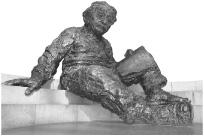

Einstein’s letters and writings through 1920 have been published in The Collected Papers of Albert Einstein series, and they are identified by the dates used in those volumes. Unpublished material that is in the Albert Einstein Archives (AEA) is identified using the folder (reel)-document numbering format of the archives. For some of the material, especially that previously unpublished, I have used translations made for me by James Hoppes and Natasha Hoffmeyer.
EPIGRAPH
1. Einstein to Eduard Einstein, Feb. 5, 1930. Eduard was suffering from deepening mental illness at the time. The exact quote is: “Beim Menschen ist es wie beim Velo. Nur wenn er faehrt, kann er bequem die Balance halten.” A more literal translation is: “It is the same with people as it is with riding a bike. Only when moving can one comfortably maintain one’s balance.” Courtesy of Barbara Wolff, Einstein archives, Hebrew University, Jerusalem.
CHAPTER ONE: THE LIGHT-BEAM RIDER
1. Einstein to Conrad Habicht, May 18 or 25, 1905.
2. These ideas are drawn from essays I wrote in Time, Dec. 31, 1999, and Discover, Sept. 2004.
3. Dudley Herschbach, “Einstein as a Student,” Mar. 2005, unpublished paper provided to the author. Herschbach says, “Efforts to improve science education and literacy face a root problem: science and mathematics are regarded not as part of the general culture, but rather as the province of priest-like experts. Einstein is seen as a towering icon, the exemplar par excellence of lonely genius. That fosters an utterly distorted view of science.”
4. Frank 1957, xiv; Bernstein 1996b, 18.
5. Vivienne Anderson to Einstein, Apr. 27, 1953, AEA 60-714; Einstein to Vivienne Anderson, May 12, 1953, AEA 60-716.
6. Viereck, 377. See also Thomas Friedman, “Learning to Keep Learning,”New York Times, Dec. 13, 2006.
7. Einstein to Mileva Mari, Dec. 12, 1901; Hoffmann and Dukas, 24. Hoff-mann was Einstein’s friend in the late 1930s in Princeton. He notes, “His early suspicion of authority, which never wholly left him, was to prove of decisive importance.”
8. Einstein message for Ben Scheman dinner, Mar. 1952, AEA 28-931.
CHAPTER TWO: CHILDHOOD
1. Einstein to Sybille Blinoff, May 21, 1954, AEA 59-261; Ernst Straus, “Reminiscences,” in Holton and Elkana, 419; Vallentin, 17; Maja Einstein, lviii.
2. See, for example, Thomas Sowell, The Einstein Syndrome: Bright Children Who Talk Late (New York: Basic Books, 2002).
3. Nobel laureate James Franck quoting Einstein in Seelig 1956b, 72.
4. Vallentin, 17; Einstein to psychologist Max Wertheimer, in Wertheimer, 214.
5. Einstein to Hans Muehsam, Mar. 4,1953, AEA 60-604. Also: “I think we can dispense with this question of heritage,” Einstein is quoted in Seelig 1956a, 11. See also Michelmore, 22.
6. Maja Einstein, xvi; Seelig 1956a, 10.
7. www.alemannia-judaica.de/synagoge_buchau.htm.
8. Einstein to Carl Seelig, Mar. 11, 1952, AEA 39-13; Highfield and Carter, 9.
9. Maja Einstein, xv; Highfield and Carter, 9; Pais 1982, 36.
10. Birth certificate, CPAE 1: 1; Fantova, Dec. 5, 1953.
11. Pais 1982, 36–37.
12. Maja Einstein, xviii. Maria was sometimes used as a stand-in for the name Miriam in Jewish families.
13. Frank 1947, 8.
14. Maja Einstein, xviii–xix; Fölsing, 12; Pais 1982, 37.
15. Some researchers view such a pattern as possibly being a mild manifestation of autism or Asperger’s syndrome. Simon Baron-Cohen, the director of the Autism Research Center at Cambridge University, is among those who suggest that Einstein might have exhibited characteristics of autism. He writes that autism is associated with a “particularly intense drive to systemize and an unusually low drive to empathize.” He also notes that this pattern “explains the ‘islets of ability’ that people with autism display in subjects like math or music or drawing—all skills that benefit from systemizing.” See Simon Baron-Cohen, “The Male Condition,”New York Times , Aug. 8, 2005; Simon Baron-Cohen, The Essential Difference (New York: Perseus, 2003), 167; Norm Ledgin, Asperger’s and Self-Esteem: Insight and Hope through Famous Role Models (Arlington,TX: Future Horizons, 2002), chapter 7; Hazel Muir, “Einstein and Newton Showed Signs of Autism,”New Scientist , Apr. 30, 2003; Thomas Marlin, “Albert Einstein and LD,”Journal of Learning Disabilities , Mar. 1, 2000, 149. A Google search of Einstein + Asperger’s results in 146,000 pages. I do not find such a long-distance diagnosis to be convincing. Even as a teenager, Einstein made close friends, had passionate relationships, enjoyed collegial discussions, communicated well verbally, and could empathize with friends and humanity in general.
16. Einstein 1949b, 9; Seelig 1956a, 11; Hoffmann 1972, 9; Pais 1982, 37; Vallentin, 21; Reiser, 25; Holton 1973, 359; author’s interview with Shulamith Oppenheim, Apr. 22, 2005.
17. Overbye, 8; Shulamith Oppenheim, Rescuing Albert’s Compass (New York: Crocodile, 2003).
18. Holton 1973, 358.
19. Fölsing, 26; Einstein to Philipp Frank, draft, 1940, CPAE 1, p. lxiii.
20. Maja Einstein, xxi; Bucky, 156; Einstein to Hans Albert Einstein, Jan. 8, 1917.
21. Hans Albert Einstein interview in Whitrow, 21; Bucky, 148.
22. Einstein to Paul Plaut, Oct. 23, 1928, AEA 28-65; Dukas and Hoffmann, 78; Moszkowski, 222. Einstein originally wrote that music and science “complement each other in the release they offer,” but he later changed that to Befriedigung, or satisfaction, according to Barbara Wolff of Hebrew University.
23. Einstein to Otto Juliusburger, Sept. 29, 1942, AEA 38-238.
24. Clark, 25; Einstein 1949b, 3; Reiser, 28. (Anton Reiser was the pseudonym of Rudoph Kayser, who married Ilse Einstein, the daughter of Einstein’s second wife, Elsa.)
25. Maja Einstein, xix, says he was 7; in fact he enrolled on Oct. 1, 1885, when he was 6.
26. According to the version later told by his stepson-in-law, the teacher then added that Jesus was nailed to the cross “by the Jews”; Reiser, 30. But Einstein’s friend and physics colleague Philipp Frank makes a point of specifically noting that the teacher did not raise the role of the Jews; Frank 1947, 9.
27. Fölsing, 16; Einstein to unknown recipient, Apr. 3, 1920, CPAE 1: lx.
28. Reiser, 28–29; Maja Einstein, xxi; Seelig 1956a, 15; Pais 1982, 38; Fölsing, 20. Maja again has him only 8 when he enters the gymnasium, which he actually did in Oct. 1888, at age 9 and a half.
29. Brian 1996, 281. A Google search of Einstein failed math, performed in 2006, turned up close to 648,000 references.
30. Pauline Einstein to Fanny Einstein, Aug. 1, 1886; Fölsing, 18–20, citing Einstein to Sybille Blinoff, May 21, 1954, and Dr. H. Wieleitner in Nueste Nachrichten, Munich, Mar. 14, 1929.
31. Einstein to Sybille Blinoff, May 21, 1954, AEA 59-261; Maja Einstein, xx.
32. Frank 1947, 14; Reiser, 35; Einstein 1949b, 11.
33. Maja Einstein, xx; Bernstein 1996a, 24–27; Einstein interview with Henry Russo, The Tower , Princeton, Apr. 13, 1935.
34. Talmey, 164; Pais 1982, 38.
35. The first edition appeared in twelve volumes between 1853 and 1857. New editions, under a new title that is referred to in Maja’s essay, appeared in the late 1860s. They were constantly updated. The version likely owned by Einstein had twenty-one volumes and was bound into four or five large books. The definitive study of this book’s influence on Einstein is Frederick Gregory, “The Mysteries and Wonders of Science: Aaron Bernstein’s Naturwissenschaftliche Volksbücher and the Adolescent Einstein,” in Howard and Stachel 2000, 23–42. Maja Einstein, xxi; Einstein 1949b, 15; Seelig 1956a, 12.
36. Aaron Bernstein, Naturwissenschaftliche Volksbücher , 1870 ed., vols. 1, 8, 16, 19; Howard and Stachel 2000, 27–39.
37. Einstein 1949b, 5.
38. Talmey, 163. (Talmud wrote his small memoir after he had changed his name to Talmey in America.)
39. Einstein, “On the Method of Theoretical Physics,” Herbert Spencer lecture, Oxford, June 10, 1933, in Einstein 1954, 270.
40. Einstein 1949b, 9, 11; Talmey, 163; Fölsing, 23 (he speculates that the “sacred” book may have been another text); Einstein 1954, 270.
41. Aaron Bernstein, vol. 12, cited by Frederick Gregory in Howard and Stachel 2000, 37; Einstein 1949b, 5.
42. Frank 1947, 15; Jammer, 15–29. “The meaning of a life of brilliant scientific activity drew on the remnants of his fervent first feelings of youthful religiosity,” writes Gerald Holton in Holton 2003, 32.
43. Einstein 1949b, 5; Maja Einstein, xxi.
44. Einstein, “What I Believe,”Forum and Century (1930): 194, reprinted as “The World As I See It,” in Einstein 1954, 10. According to Philipp Frank, “He saw the parade as a movement of people compelled to be machines”; Frank 1947, 8.
45. Frank 1947, 11; Fölsing, 17; C. P. Snow, “Einstein,” in Variety of Men (New York: Scribner’s, 1966), 26.
46. Einstein to Jost Winteler, July 8, 1901.
47. Pais 1982, 17, 38; Hoffmann 1972, 24.
48. Maja Einstein, xx; Seelig 1956a, 15; Pais 1982, 38; Einstein draft to Philipp Frank, 1940, CPAE 1, p. lxiii.
49. Stefann Siemer, “The Electrical Factory of Jacob Einstein and Cie.,” in Renn 2005b, 128–131; Pyenson, 40.
50. Overbye, 9–10; Einstein draft to Philipp Frank, 1940, CPAE 1, p. lxiii; Hoff-mann, 1972, 25–26; Reiser, 40; Frank 1947, 16; Maja Einstein, xxi; Fölsing, 28–30.
51. Einstein to Marie Winteler, Apr. 21, 1896; Fölsing 34;The Jewish Spectator , Jan. 1969.
52. Frank 1947, 17; Maja Einstein, xxii; Hoffmann 1972, 27.
53. Einstein, “On the Investigation of the State of the Ether in a Magnetic Field,” summer 1895, CPAE 1: 5.
54. Einstein to Caesar Koch, summer 1895.
55. Albin Herzog to Gustave Maier, Sept. 25, 1895, CPAE 1 (English), p. 7; Fölsing, 37; Seelig 1956a, 9.
56. This process of envisaging is what Kantian philosophers call Anschauung. See Miller 1984, 241–246.
57. Seelig 1956b, 56; Fölsing, 38.
58. Miller 2001, 47; Maja Einstein, xxii; Seelig 1956b, 9; Fölsing, 38; Holton, “On Trying to Understand Scientific Genius,” in Holton 1973, 371.
59. Bucky, 26; Fölsing, 46. Einstein provides a fuller description in his “Autobiographical Notes,” in Schilpp, 53.
60. Gustav Maier to Jost Winteler, Oct. 26, 1895, CPAE 1: 9; Fölsing, 39; High-field and Carter, 22–24.
61. Vallentin, 12; Hans Byland, Neue Bündner Zeitung , Feb. 7, 1928, cited in Seelig 1956a, 14; Fölsing, 39.
62. Pauline Einstein to the Winteler family, Dec. 30, 1895, CPAE 1: 15.
63. Einstein to Marie Winteler, Apr. 21, 1896.
64. Entrance report, Aarau school, CPAE 1: 8; Aarau school record, CPAE 1: 10; Hermann Einstein to Jost Winteler, Oct. 29, 1995, CPAE 1: 11, and Dec. 30, 1895, CPAE 1: 14.
65. Report on a Music Examination, Mar. 31, 1896, CPAE 1: 17; Seelig 1956a, 15; Overbye, 13.
66. Release from Würtemberg citizenship, Jan. 28, 1896, CPAE 1: 16.
67. Einstein to Julius Katzenstein, Dec. 27, 1931, cited in Fölsing, 41.
68. Israelitisches Wochenblatt , Sept. 24, 1920; Einstein, “Why Do They Hate the Jews?,”Collier’s, Nov. 26, 1938.
69. Einstein to Hans Muehsam, Apr. 30, 1954, AEA 38-434; Fölsing 42.
70. Examination results, Sept. 18–21, 1896, CPAE 1: 20–27.
71. Overbye, 15; Maja Einstein, xvii.
72. Einstein to Heinrich Zangger, Aug. 11, 1918.
CHAPTER THREE: THE ZURICH POLYTECHNIC
1. Cahan, 42; editor’s note, CPAE 1 (German), p. 44.
2. Einstein 1949b, 15.
3. Record and Grade Transcript, Oct. 1896–Aug. 1900, CPAE 1: 28; Bucky, 24; Einstein to Arnold Sommerfeld, Oct. 29, 1912; Fölsing, 50.
4. Einstein to Mileva Mari, Feb. 1898; Cahan, 64.
5. Louis Kollros, “Albert Einstein en Suisse,”Helvetica Physica , Supplement 4 (1956): 22, in AEA 5-123; Adolf Frisch, in Seelig 1956a, 29; Cahan, 67; Clark, 55.
6. Seelig 1956a, 30; Overbye, 43; Miller 2001, 52; Charles Seife, “The True and the Absurd,” in Brockman, 63.
7. Record and Grade Transcript, CPAE 1: 28.
8. Seelig 1956a, 30; Bucky, 25 (a slightly different version); Fölsing, 57.
9. Seelig 1956a, 30.
10. Einstein to Julia Niggli, July 28, 1899.
11. Seelig 1956a, 28; Whitrow, 5.
12. Einstein 1949b, 15–17.
13. Einstein interview in Bucky, 27; Einstein to Elizabeth Grossmann, Sept. 20, 1936, AEA 11-481; Seelig 1956a, 34, 207; Fölsing, 53.
14. Holton 1973, 209–212. Einstein’s stepson-in-law Rudolph Kayser and colleague Philipp Frank both say that Einstein read Föppl in his spare time while at the Polytechnic.
15. Clark, 59; Galison, 32–34. Galison’s book on Poincaré and Einstein is a fascinating exposition on how they developed their concepts and how Poincaré’s observations were “an anticipatory note to Einstein’s special theory of relativity, a brilliant move by an author lacking the intellectual courage to pursue it to its logical, revolutionary end” (Galison, 34). Also very useful is Miller 2001, 200–204.
16. Seelig 1956a, 37; Whitrow, 5; Bucky, 156.
17. Miller 2001, 186; Hoffmann, 1972, 252; interview with Lili Foldes, The Etude , Jan. 1947, in Calaprice, 150; Einstein to Emil Hilb questionnaire, 1939, AEA 86-22; Dukas and Hoffmann, 76.
18. Seelig 1956a, 36.
19. Fölsing, 51, 67; Reiser, 50; Seelig 1956a, 9.
20. Clark, 50. Diana Kormos Buchwald points out that a careful examination of the picture of him at the Aarau school shows holes in his jacket.
21. Einstein to Maja Einstein, 1898.
22. Einstein to Maja Einstein, after Feb. 1899.
23. Marie Winteler to Einstein, Nov. 4–25, 1896.
24. Marie Winteler to Einstein, Nov. 30, 1896.
25. Pauline Einstein to Marie Winteler, Dec. 13, 1896.
26. Einstein to Pauline Winteler, May 1897.
27. Marie Winteler to Einstein, Nov. 4–25, Nov. 30.
28. Novi Sad, the cultural center of the Serbian people, had long been a “free royal city,” then part of a Serbian autonomous region of the Hapsburg Empire. By the time Mari was born, it was in the Hungarian part of Austria-Hungary. Approximately 40 percent of the citizens there spoke Serbian when she was growing up, 25 percent spoke Hungarian, and about 20 percent spoke German. It is now the second largest city, after Belgrade, in the Republic of Serbia.
29. Desanka Trbuhovic-Gjuric, 9–38; Dord Krstic, “Mileva Einstein-Mari,” in Elizabeth Einstein, 85; Overbye, 28–33; Highfield and Carter, 33–38; Marriage certificate, CPAE 5: 4.
30. Dord Krstic, “Mileva Einstein-Mari,” in Elizabeth Einstein, 88 (Krstic’s piece is based partly on interviews with school friends); Barbara Wolff, an expert on Einstein’s life at the Hebrew University archives, says, “I imagine that Einstein was the main reason Mileva fled Zurich.”
31. Mileva Mari to Einstein, after Oct. 20, 1897.
32. Einstein to Mileva Mari, Feb. 16, 1898.
33. Einstein to Mileva Mari, after Apr. 16, 1898, after Nov. 28, 1898.
34. Recollection of Suzanne Markwalder, in Seelig 1956a, 34; Fölsing, 71.
35. Einstein to Mileva Mari, Mar. 13 or 20, 1899.
36. Einstein to Mileva Mari, Aug. 10, 1899, Mar. 1899, Sept. 13, 1900.
37. Einstein to Mileva Mari, Sept. 13, 1900, early Aug. 1899, Aug. 10, 1899.
38. Einstein to Mileva Mari, ca. Sept. 28, 1899.
39. Mileva Mari to Einstein, 1900.
40. Intermediate Diploma Examinations, Oct. 21, 1898, CPAE 1: 42.
41. Einstein to Mileva Mari, Sept. 10, 1899; Einstein 1922c (see bibliography for explanation about this Dec. 14, 1922, lecture in Kyoto, Japan).
42. Einstein, 1922c; Reiser, 52; Einstein to Mileva Mari, ca. Sept. 28, 1899; Renn and Schulmann, 85, footnotes 11: 3, 11: 4. Wilhelm Wien’s paper was delivered in Sept. 1898 in Düsseldorf and published in the Annalen der Physik 65, no. 3 of that year.
43. Einstein to Mileva Mari, Oct. 10, 1899; Seelig 1956a, 30; Fölsing, 68; Over-bye, 55; final diploma examinations, CPAE 1: 67. The essay marks as recorded in CPAE are multiplied by 4 to reflect their weight in the final results.
44. Final diploma examinations, CPAE 1: 67.
45. Einstein to Walter Leich, Apr. 24, 1950, AEA 60-253; Walter Leich memo describing Einstein, Mar. 6, 1957, AEA 60-257.
46. Einstein, 1949b, 17.
47. Einstein to Mileva Mari, Aug. 1, 1900.
CHAPTER FOUR: THE LOVERS
1. Einstein to Mileva Mari, ca. July 29, 1900.
2. Einstein to Mileva Mari, Aug. 6, 1900.
3. Einstein to Mileva Mari, Aug. 1, Sept. 13, Oct. 3, 1900.
4. Einstein to Mileva Mari, Aug. 30, 1900.
5. Einstein to Mileva Mari, Aug. 1, Aug. 6, ca. Aug. 14, Aug. 20, 1900.
6. Einstein to Mileva Mari, Aug. 6, 1900.
7. Einstein to Mileva Mari, ca. Aug. 9, Aug. 14?, Aug. 20, 1900.
8. Einstein to Mileva Mari, ca. Aug. 9, ca. Aug. 14, 1900. Both of these letters came from this visit to Zurich.
9. Einstein to Mileva Mari, Sept. 13, 1900.
10. Einstein to Mileva Mari, Sept. 19, 1900.
11. Einstein to Adolf Hurwitz, Sept. 26, Sept. 30, 1900.
12. Einstein to Mileva Mari, Oct. 3, 1900; Einstein to Mrs. Marcel Grossmann, 1936; Seelig 1956a, 208.
13. Einstein’s municipal citizenship application, Zurich, Oct. 1900, CPAE 1: 82; Einstein to Helene Kaufler, Oct. 11, 1900; minutes of the naturalization commission of Zurich, Dec. 14, 1900, CPAE 1: 84.
14. Einstein to Mileva Mari, Sept. 13, 1900.
15. Einstein to Mileva Mari, Oct. 3, 1900.
16. Einstein, “Conclusions Drawn from the Phenomena of Capillarity,”Annalen der Physik , CPAE 2: 1, received Dec. 13, 1900, published Mar. 1, 1901. “The paper is very difficult to understand, not least because of the large number of obvious misprints; from its lack of clarity we can only assume that it had not been independently refereed ... Yet it was an extraordinarily advanced paper for a recent graduate who was receiving no independent scientific advice.” John N. Murrell and Nicole Grobert, “The Centenary of Einstein’s First Scientific Paper,”The Royal Society (London), Jan. 22, 2002, www.journals.royalsoc.ac.uk/app/home/content.asp.
17. Dudley Herschbach, “Einstein as a Student,” Mar. 2005, unpublished paper provided to the author.
18. Einstein to Mileva Mari, Apr. 15, Apr. 30, 1901; Mileva Mari to Helene Savi, Dec. 20, 1900.
19. Einstein to G. Wessler, Aug. 24, 1948, AEA 59-26.
20. Maja Einstein, sketch, 19; Reiser, 63; minutes of the Municipal Naturalization Commission of Zurich, Dec. 14, 1900, CPAE 1: 84; Report of the Schweitzerisches Informationsbureau, Jan. 30, 1901, CPAE 1: 88; Military Service Book, Mar. 13, 1901, CPAE 1: 91.
21. Mileva Mari to Helene Savi, Dec. 20, 1900; Einstein to Mileva Mari, Mar. 23, Mar. 27, 1901.
22. Einstein to Mileva Mari, Apr. 4, 1901.
23. Einstein to Heike Kamerlingh Onnes, Apr. 12, 1901; Einstein to Marcel Grossmann, Apr. 14, 1901; Fölsing, 78; Clark, 66; Miller 2001, 68.
24. Einstein to Wilhelm Ostwald, Mar. 19, Apr. 3, 1901.
25. Hermann Einstein to Wilhelm Ostwald, Apr. 13, 1901.
26. Einstein to Mileva Mari, Mar. 23, Mar. 27, 1901; Einstein to Marcel Grossmann, Apr. 14, 1901.
27. Einstein to Mileva Mari, Mar. 27, 1901; Mileva Mari to Helene Savi, Dec. 9, 1901.
28. Einstein to Mileva Mari, Apr. 4, 1901; Einstein to Michele Besso, June 23, 1918; Overbye, 25; Miller 2001, 78; Fölsing, 115.
29. Einstein to Mileva Mari, Mar. 27, Apr. 4, 1901.
30. Einstein to Marcel Grossmann, Apr. 14, 1901; Einstein to Mileva Mari, Apr. 15, 1901.
31. Einstein to Mileva Mari, Apr. 30, 1901. The official translation is “blue nightshirt,” but the word that Einstein actually used, Schlafrock , translates more accurately as “dressing gown.”
32. Mileva Mari to Einstein, May 2, 1901.
33. Mileva Mari to Helene Savi, second half of May, 1901.
34. Einstein to Mileva Mari, second half of May, 1901.
35. Einstein to Mileva Mari, tentatively dated in CPAE as May 28?, 1901. The actual date is probably a week or so later.
36. Overbye, 77–78.
37. Einstein to Mileva Mari, July 7, 1901.
38. Mileva Mari to Einstein, after July 7, 1901 (published in CPAE vol. 8 as 1: 116, because it was discovered after vol. 1 had been printed).
39. Mileva Mari to Einstein, ca. July 31, 1901; Highfield and Carter, 80.
40. Einstein to Jost Winteler, July 8, 1901; Einstein to Marcel Grossmann, Apr. 14, 1901. The comparison to the compass needle comes from Overbye, 65.
41. Renn 2005a, 109. Jürgen Renn is the director of the Max Planck Institute for the History of Science in Berlin and an editor of the Collected Papers of Albert Einstein. I am grateful to him for help with this topic.
42. Einstein to Mileva Mari, Apr. 15, 1901; Einstein to Marcel Grossmann, Apr. 15, 1901.
43. Renn 2005a, 124.
44. Einstein to Mileva Mari, Apr. 4, ca. June 4, 1901. The letters to and from Drude no longer exist, so it is not known precisely what Einstein’s objections were.
45. Einstein to Mileva Mari, ca. July 7, 1901; Einstein to Jost Winteler, July 8, 1901.
46. Renn 2005a, 118. Renn’s source notes say, “I gratefully acknowledge the kindness of Mr. Felix de Marez Oyens, from Christie’s, who pointed my attention to the missing page of the letter by Einstein to Mileva Mari, ca. 8 July 1901. As, unfortunately, no copy of the page is available to me, my interpretation had to be based on a raw transcription of the passage in question.”
47. Einstein to Marcel Grossmann, Sept. 6, 1901.
48. Overbye, 82–84. This includes a good synopsis of the Boltzmann-Ostwald dispute.
49. Einstein, “On the Thermodynamic Theory of the Difference in Potentials between Metals and Fully Dissociated Solutions of Their Salts,” Apr. 1902. Renn does not mention this paper in his analysis of Einstein’s dispute with Drude, and instead focuses only on the June 1902 paper.
50. Einstein, “Kinetic Theory of Thermal Equilibrium and the Second Law of Thermodynamics,” June 1902; Renn 2005a, 119; Jos Uffink, “Insuperable Difficulties: Einstein’s Statistical Road to Molecular Physics,”Studies in the History and Philosophy of Modern Physics 37 (2006): 38; Clayton Gearhart, “Einstein before 1905: The Early Papers on Statistical Mechanics,”American Journal of Physics (May 1990): 468.
51. Mileva Mari to Helene Savi, ca. Nov. 23, 1901; Einstein to Mileva Mari, Nov. 28, 1901.
52. Einstein to Mileva Mari, Dec. 17 and 19, 1901.
53. Receipt for the return of Doctoral Fees, Feb. 1, 1902, CPAE 1: 132; Fölsing, 88–90; Reiser, 69; Overbye, 91. From Einstein to Mileva Mari, ca. Feb. 8, 1902: “I’m explaining to [Conrad] Habicht the paper I submitted to Kleiner. He’s very enthusiastic about my good ideas and is pestering me to send Boltzmann the part of the paper which relates to his book. I’m going to do it.”
54. Einstein to Marcel Grossmann, Sept. 6, 1901.
55. Einstein to Mileva Mari, Nov. 28, 1901.
56. Mileva Mari to Einstein, Nov. 13, 1901; Highfield and Carter, 82.
57. Einstein to Mileva Mari, Dec. 12, 1901; Fölsing, 107; Zackheim, 35; High-field and Carter, 86.
58. Pauline Einstein to Pauline Winteler, Feb. 20, 1902.
59. Mileva Mari to Helene Savi, ca. Nov. 23, 1901.
60. Einstein to Mileva Mari, Dec. 11 and 19, 1901.
61. Einstein to Mileva Mari, Dec. 28, 1901.
62. Einstein to Mileva Mari, Feb. 4, 1902, Dec. 12, 1901.
63. Einstein to Mileva Mari, Feb. 4, 1902.
64. Mileva Mari to Einstein, Nov. 13, 1901. For some context, see Popovi, which includes a collection of letters between Mari and Savi collected by Savi’s grandson.
65. Einstein to Mileva Mari, Feb. 17, 1902.
66. Swiss Federal Council to Einstein, June 19, 1902.
67. See Peter Galison’s treatment of the synchronization of time in Europe at that period, in Galison, 222–248. Also, see chapter 6 below for a fuller discussion of the role this might have played in Einstein’s development of special relativity.
68. Einstein to Hans Wohlwend, autumn 1902; Fölsing, 102.
69. Einstein interview, Bucky, 28; Reiser, 66.
70. Einstein to Michele Besso, Dec. 12, 1919.
71. Einstein interview, Bucky, 28; Einstein 1956, 12. Both say essentially the same thing, with variations in wording and translation. Reiser, 64.
72. Alas, as a rule, all applications were destroyed after eighteen years, and even though Einstein was by then world-famous, his comments on inventions were disposed of during the 1920s; Fölsing, 104.
73. Galison, 243; Flückiger, 27.
74. Fölsing, 103; C. P. Snow, “Einstein,” in Goldsmith et al., 7.
75. Einstein interview, Bucky, 28; Einstein 1956, 12. See Don Howard, “A kind of vessel in which the struggle for eternal truth is played out,” AEA Cedex-H.
76. Solovine, 6.
77. Maurice Solovine, Dedication of the Olympia Academy, “A.D. 1903,” CPAE 2: 3.
78. Solovine, 11–14.
79. Einstein to Maurice Solovine, Nov. 25, 1948; Seelig 1956a, 57; Einstein to Conrad Habicht and Maurice Solovine, Apr. 3, 1953; Hoffmann 1972, 243.
80. The editors of Einstein’s papers, in the introduction to vol. 2, xxiv–xxv, describe the books and specific editions read by the Olympia Academy.
81. Einstein to Moritz Schlick, Dec. 14, 1915. In a 1944 essay about Bertrand Russell, Einstein wrote, “Hume’s clear message seemed crushing: the sensory raw material, the only source of our knowledge, through habit may lead us to belief and expectation but not to the knowledge and still less to the understanding of lawful relations.” Einstein 1954, 22. See also Einstein, 1949b, 13.
82. David Hume, Treatise on Human Nature , book 1, part 2; Norton 2005a.
83. There are varying interpretations of Kant’s Critique of Pure Reason (1781). I have tried here to stick closely to Einstein’s own view of Kant. Einstein, “Re-marks on Bertrand Russell’s Theory of Knowledge,” (1944) in Schilpp; Einstein 1954, 22; Einstein, 1949b, 11–13; Einstein, “On the Methods of Theoretical Physics,” the Herbert Spencer lecture, Oxford, June 10, 1933, in Einstein 1954, 270; Mara Beller, “Kant’s Impact on Einstein’s Thought,” in Howard and Stachel 2000, 83–106. See also Einstein, “Physics and Reality” (1936) in Einstein 1950a, 62; Yehuda Elkana, “The Myth of Simplicity,” in Holton and Elkana, 221.
84. Einstein 1949b, 21.
85. Einstein, Obituary for Ernst Mach, Mar. 14, 1916, CPAE 6: 26.
86. Philipp Frank, “Einstein, Mach and Logical Positivism,” in Schilpp, 272; Overbye, 25, 100–104; Gerald Holton, “Mach, Einstein and the Search for Reality,”Daedalus (spring 1968): 636–673, reprinted in Holton 1973, 221; Clark, 61; Einstein to Carl Seelig, Apr. 8, 1952; Einstein, 1949b, 15; Norton 2005a.
87. Spinoza, Ethics, part I, proposition 29 and passim; Jammer 1999, 47; Holton 2003, 26–34; Matthew Stewart, The Courtier and the Heretic (New York: Norton, 2006).
88. Pais 1982, 47; Fölsing, 106; Hoffmann 1972, 39; Maja Einstein, xvii; Overbye, 15–17.
89. Marriage Certificate, CPAE 5: 6; Miller 2001, 64; Zackheim, 47.
90. Einstein to Michele Besso, Jan. 22, 1903; Mileva Mari to Helene Savi, Mar. 1903; Solovine, 13; Seelig 1956a, 46; Einstein to Carl Seelig, May 5, 1952; AEA 39-20.
91. Mileva Mari to Einstein, Aug. 27, 1903; Zackheim, 50.
92. Einstein to Mileva Mari, ca. Sept. 19, 1903; Zackheim; Popovi; author’s discussions and e-mails with Robert Schulmann.
93. Popovi, 11; Zackheim, 276; author’s discussions and e-mails with Robert Schulmann.
94. Michelmore, 42.
95. Einstein to Mileva Mari, ca. Sept. 19, 1903.
96. Mileva Mari to Helene Savi, June 14, 1904; Popovi, 86; Whitrow, 19.
97. Overbye, 113, citing Desanka Trbuhovic-Gjuric, Im Schatten Albert Einstein (Bern: Verlag Paul Haupt, 1993), 94.
CHAPTER FIVE: THE MIRACLE YEAR
1. This quote is attributed in a variety of books and sources to an address Lord Kelvin gave to the British Association for the Advancement of Science in 1900. I have not found direct evidence for it, which is why I qualify it as “reportedly” said. It is not in the two-volume biography by Silvanus P. Thompson, The Life of Lord Kelvin (New York: Chelsea Publishing, 1976), originally published in 1910.
2. Pierre-Simon Laplace, A Philosophical Essay on Probabilities (1820; reprinted, New York: Dover, 1951). This famous statement of determinism comes in the preface of a work devoted to probability theory. The fuller line is that in ultimate reality we have determinism, but in practice we have probabilities. The achievement of full knowledge is not reachable, he says, so we need probabilities.
3. Einstein, Letter to the Royal Society on Newton’s bicentennial, Mar. 1927.
4. Einstein 1949b, 19.
5. For the influence of Faraday’s induction theories on Einstein, see Miller 1981, chapter 3.
6. Einstein and Infeld, 244; Overbye, 40; Bernstein 1996a, 49.
7. Einstein to Conrad Habicht, May 18 or 25, 1905.
8. Sent on Mar. 17, 1905, and published in Annalen der Physik 17 (1905). I want to thank Yale professor Douglas Stone for help with this section.
9. Max Born, obituary for Max Planck, Royal Society of London, 1948.
10. John Heilbron, The Dilemmas of an Upright Man (Berkeley: University of California Press, 1986). Lucid explanations of Einstein’s quantum paper, from which this section is drawn, include Gribbin and Gribbin; Bernstein 1996a, 2006; Overbye, 118–121; Stachel 1998; Rigden; A. Douglas Stone, “Genius and Genius2: Planck, Einstein and the Birth of Quantum Theory,” Aspen Center for Physics, unpublished lecture, July 20, 2005.
11. Planck’s approach was probably a bit more complex and involved assuming a group of oscillators and positing a total energy that is an integer multiple of a quantum unit. Bernstein 2006, 157–161.
12. Max Planck, speech to the Berlin Physical Society, Dec. 14, 1900. See Light-man 2005, 3.
13. Einstein 1949b, 46. Miller 1984, 112; Miller 1999, 50; Rynasiewicz and Renn, 5.
14. Einstein, “On the General Molecular Theory of Heat,” Mar. 27, 1904.
15. Einstein to Conrad Habicht, Apr. 15, 1904. Jeremy Bernstein discussed the connections between the 1904 and 1905 papers in an e-mail, July 29, 2005.
16. Einstein, “On a Heuristic Point of View Concerning the Production and Transformation of Light,” Mar. 17, 1905.
17. “We are startled, wondering what happened to the waves of light of the 19th century theory and marveling at how Einstein could see the signature of atomic discreteness in the bland formulae of thermodynamics,” says the science historian John D. Norton. “Einstein takes what looks like a dreary fragment of the thermodynamics of heat radiation, an empirically based expression for the entropy of a volume of high-frequency heat radiation. In a few deft inferences he converts this expression into a simple, probabilistic formula whose unavoidable interpretation is that the energy of radiation is spatially localized in finitely many, independent points.” Norton 2006c, 73. See also Lightman 2005, 48.
18. Einstein’s paper in 1906 noted clearly that Planck had not grasped the full implications of the quantum theory. Apparently, Besso encouraged Einstein not to make this criticism of Planck too explicit. As Besso wrote much later, “In helping you edit your publications on the quanta, I deprived you of a part of your glory, but, on the other hand, I made a friend for you in Planck.” Michele Besso to Einstein, Jan. 17, 1928. See Rynasiewicz and Renn, 29; Bernstein 1991, 155.
19. Holton and Brush, 395.
20. Gilbert Lewis coined the name “photon” in 1926. Einstein in 1905 discovered a quantum of light. Only later, in 1916, did he discuss the quantum’s momentum and its zero rest mass. Jeremy Bernstein has noted that one of the most interesting discoveries Einstein did not make in 1905 was the photon. Jeremy Bernstein, letter to the editor, Physics Today , May 2006.
21. Gribbin and Gribbin, 81.
22. Max Planck to Einstein, July 6, 1907.
23. Max Planck and three others to the Prussian Academy, June 12, 1913, CPAE 5: 445.
24. Max Planck, Scientific Autobiography (New York: Philosophical Library, 1949), 44; Max Born, “Einstein’s Statistical Theories,” in Schilpp, 163.
25. Quoted in Gerald Holton, “Millikan’s Struggle with Theory,”Europhysics News 31 (2000): 3.
26. Einstein to Michele Besso, Dec. 12, 1951, AEA 7-401.
27. Completed Apr. 30, 1905, submitted to the University of Zurich on July 20, 1905, submitted to Annalen der Physik in revised form on Aug. 19, 1905, and published by Annalen der Physik Jan. 1906. See Norton 2006c and www.pitt.edu/~jdnorton/Goodies/Einstein_stat_1905/.
28. Jos Uffink, “Insuperable Difficulties: Einstein’s Statistical Road to Molecular Physics,”Studies in the History and Philosophy of Modern Physics 37 (2006): 37, 60.
29. bulldog.u-net.com/avogadro/avoga.html.
30. Rigden, 48–52; Bernstein 1996a, 88; Gribbin and Gribbin, 49–54; Pais 1982, 88.
31. Hoffmann 1972, 55; Seelig 1956b, 72; Pais 1982, 88–89.
32. Brownian motion introduction, CPAE 2 (German), p. 206; Rigden, 63.
33. Einstein, “On the Motion of Small Particles Suspended in Liquids at Rest Required by the Molecular-Kinetic Theory of Heat,” submitted to the Annalen der Physik on May 11, 1905.
34. Einstein 1949b, 47.
35. The root mean square average is asymptotic to ff2n/?. Good analyses of the relationship of random walks to Einstein’s Brownian motion are in Gribbin and Gribbin, 61; Bernstein 2006, 117. I am grateful to George Stranahan of the Aspen Center for Physics for his help on the mathematics behind this relationship.
36. Einstein, “On the Theory of Brownian Motion,” 1906, CPAE 2: 32 (in which he notes Seidentopf ’s results); Gribbin and Gribbin, 63; Clark, 89; Max Born, “Einstein’s Statistical Theories,” in Schilpp, 166.
CHAPTER SIX: SPECIAL RELATIVITY
1. Contemporary historical research on Einstein’s special theory begins with Gerald Holton’s essay, “On the Origins of the Special Theory of Relativity” (1960), reprinted in Holton 1973, 165. Holton remains a guiding light in this field. Most of his earlier essays are incorporated in his books Thematic Origins of Scientific Thought: Kepler to Einstein (1973), Einstein, History and Other Passions (2000), and The Scientific Imagination, Cambridge, Mass.: Harvard University Press, 1998.
Einstein’s popular description is his 1916 book, Relativity: The Special and the General Theory , and his more technical description is his 1922 book, The Meaning of Relativity.
For good explanations of special relativity, see Miller 1981, 2001; Galison; Bernstein 2006; Calder; Feynman 1997; Hoffmann 1983; Kaku; Mermin; Penrose; Sartori; Taylor and Wheeler 1992; Wolfson.
This chapter draws on these books along with the articles by John Stachel; Arthur I. Miller; Robert Rynasiewicz; John D. Norton; John Earman, Clark Glymour, and Robert Rynasiewicz; and Michel Jannsen listed in the bibliography. See also Wertheimer 1959. Arthur I. Miller provides a careful and skeptical look at Max Wertheimer’s attempt to reconstruct Einstein’s development of special relativity as a way to explain Gestalt psychology; see Miller 1984, 189–195.
2. See Janssen 2004 for an overview of the arguments that Einstein’s attempt to extend general relativity to arbitrary and rotating motion was not fully successful and perhaps less necessary than he thought.
3. Galileo Galilei, Dialogue Concerning the Two Chief World Systems (1632), translated by Stillman Drake, 186.
4. Miller 1999, 102.
5. Einstein, “Ether and the Theory of Relativity,” address at the University of Leiden, May 5, 1920.
6. Ibid.; Einstein 1916, chapter 13.
7. Einstein, “Ether and the Theory of Relativity,” address at the University of Leiden, May 5, 1920.
8. Einstein to Dr. H. L. Gordon, May 3, 1949, AEA 58-217.
9. See Alan Lightman’s Einstein’s Dreams for an imaginative and insightful fictional rumination on Einstein’s discovery of special relativity. Lightman captures the flavor of the professional, personal, and scientific thoughts that might have been swirling in Einstein’s mind.
10. Peter Galison, the Harvard science historian, is the most compelling proponent of the influence of Einstein’s technological environment. Arthur I. Miller presents a milder version. Among those who feel that these influences are overstated are John Norton, Tilman Sauer, and Alberto Martinez. See Alberto Martinez, “Material History and Imaginary Clocks,”Physics in Perspective 6 (2004): 224.
11. Einstein 1922c. I rely on a corrected translation of this 1922 lecture that gives a different view of what Einstein said; see bibliography for an explanation.
12. Einstein, 1949b, 49. For other versions, see Wertheimer, 214; Einstein 1956, 10.
13. Miller 1984, 123, has an appendix explaining how the 1895 thought experiment affected Einstein’s thinking. See also Miller 1999, 30–31; Norton 2004, 2006b. In the latter paper, Norton notes, “[This] is untroubling to an ether theorist. Maxwell’s equations do entail quite directly that the observer would find a frozen waveform; and the ether theorist does not expect frozen waveforms in our experience since we do not move at the velocity of light in the ether.”
14. Einstein to Erika Oppenheimer, Sept. 13, 1932, AEA 25-192; Moszkowski, 4.
15. Gerald Holton was the first to emphasize Föppl’s influence on Einstein, citing the memoir by his son-in-law Anton Reiser and the German edition of Philipp Frank’s biography. Holton 1973, 210.
16. Einstein, “Fundamental Ideas and Methods of the Theory of Relativity” (1920), unpublished draft of an article for Nature, CPAE 7: 31. See also Holton 1973, 362–364; Holton 2003.
17. Einstein to Mileva Mari, Aug. 10, 1899.
18. Einstein to Mileva Mari, Sept. 10 and 28, 1899; Einstein 1922c.
19. Einstein to Robert Shankland, Dec. 19, 1952, says that he read Lorentz’s book before 1905. In his 1922 Kyoto lecture (Einstein 1922c) he speaks of being a student in 1899 and says, “Just at that time I had a chance to read Lorentz’s paper of 1895.” Einstein to Michele Besso, Jan. 22?, 1903, says he is beginning “comprehensive, extensive studies in electron theory.” Arthur I. Miller provides a good look at what Einstein had already learned. See Miller 1981, 85–86.
20. This section draws from Gerald Holton, “Einstein, Michelson, and the ‘Crucial’ Experiment,” in Holton 1973, 261–286, and Pais 1982, 115–117. Both assess Einstein’s varying statements. The historical approach has evolved over the years. For example, Einstein’s longtime friend and fellow physicist Philipp Frank wrote in 1957, “Einstein started from the most prominent case in which the old laws of motion and light propagation had failed to yield to the observed facts: the Michelson experiment” (Frank 1957, 134). Gerald Holton, the Harvard historian of science, wrote in a letter to me about this topic (May 30, 2006): “Concerning the Michelson/Morley experiment, until three or four decades ago practically everyone wrote, particularly in textbooks, that there was a straight line between that experiment and Einstein’s special relativity. All this changed of course when it became possible to take a careful look at Einstein’s own documents on the matter ... Even non-historians have long ago given up the idea that there was a crucial connection between that particular experiment and Einstein’s work.”
21. Einstein 1922c; Einstein toast to Albert Michelson, the Athenaeum, Caltech, Jan. 15, 1931, AEA 8-328; Einstein message to Albert Michelson centennial, Case Institute, Dec. 19, 1952, AEA 1-168.
22. Wertheimer, chapter 10; Miller 1984, 190.
23. Robert Shankland interviews and letters, Feb. 4, 1950, Oct. 24, 1952, Dec. 19, 1952. See also Einstein to F. G. Davenport, Feb. 9, 1954: “In my own development, Michelson’s result has not had a considerable influence, I even do not remember if I knew of it at all when I wrote my first paper on the subject. The explanation is that I was, for general reasons, firmly convinced that there does not exist absolute motion.”
24. Miller 1984, 118: “It was unnecessary for Einstein to review every extant ether-drift experiment, because in his view their results were ab initio [from the beginning] a foregone conclusion.” This section draws on Miller’s work and on suggestions he made to an earlier draft.
25. Einstein saw the null results of the ether-drift experiments as support for the relativity principle, not (as is sometimes assumed) support for the postulate that light always moves at a constant velocity. John Stachel, “Einstein and Michelson: The Context of Discovery and Context of Justification,” 1982, in Stachel 2002a.
26. Professor Robert Rynasiewicz of Johns Hopkins is among those who emphasize Einstein’s reliance on inductive methods. Even though Einstein in his later career wrote often that he relied more on deduction than on induction, Rynasiewicz calls this “highly contentious.” He argues instead, “My view of the annus mirabilis is that it is a triumph of what can be secured inductively in the way of fixed points from which to carry on despite the lack of a fundamental theory.” Rynasiewicz e-mail to me, commenting on an earlier draft of this section, June 29, 2006.
27. Miller 1984, 117; Sonnert, 289.
28. Holton 1973, 167.
29. Einstein, “Induction and Deduction in Physics,”Berliner Tageblatt , Dec. 25, 1919, CPAE 7: 28.
30. Einstein to T. McCormack, Dec. 9, 1952, AEA 36-549. McCormack was a Brown University undergraduate who had written Einstein a fan letter.
31. Einstein 1949b, 89.
32. The following analysis draws from Miller 1981 and from the work of John Stachel, John Norton, and Robert Rynasiewicz cited in the bibliography. Miller, Norton, and Rynasiewicz kindly read drafts of my work and suggested corrections.
33. Miller 1981, 311, describes a connection between Einstein’s papers on light quanta and special relativity. In section 8 of his special relativity paper, Einstein discusses light pulses and declares, “It is remarkable that the energy and the frequency of a light complex vary with the state of motion of the observer in accordance with the same law.”
34. Norton 2006a.
35. Einstein to Albert Rippenbein, Aug. 25, 1952, AEA 20-46. See also Einstein to Mario Viscardini, Apr. 28, 1922, AEA 25-301: “I rejected this hypothesis at that time, because it leads to tremendous theoretical difficulties (e.g., the explanation of shadow formation by a screen that moves relative to the light source).”
36. Mermin, 23. This was finally proven conclusively by Willem de Sitter’s study of double stars that rotate around each other at great speeds, which was published in 1913. But even before then, scientists had noted that no evidence could be found for the theory that the velocity of light from moving stars, or any other source, varied.
37. Einstein to Paul Ehrenfest, Apr. 25, June 20, 1912. By taking this approach, Einstein was continuing to lay the foundation for a quandary about quantum theory that would bedevil him for the rest of his life. In his light quanta paper, he had praised the wave theory of light while at the same time proposing that light could also be regarded as particles. An emission theory of light could have fit nicely with that approach. But both facts and intuition made him abandon that approach to relativity, just at the same moment he was finishing his light quanta paper. “To me, it is virtually inconceivable that he would have put forward two papers in the same year which depended upon hypothetical views of Nature that he felt were in contradiction with each other,” says physicist Sir Roger Penrose. “Instead, he must have felt (correctly, as it turned out) that ‘deep down’ there was no real contradiction between the accuracy—indeed ‘truth’—of Maxwell’s wave theory and the alternative ‘quantum’ particle view that he put forward in the quantum paper. One is reminded of Isaac Newton’s struggles with basically the same problem—some 300 years earlier—in which he proposed a curious hybrid of a wave and particle viewpoint in order to explain conflicting aspects of the behavior of light.” Roger Penrose, foreword to Einstein’s Miraculous Year (Princeton: Princeton University Press, 2005), xi. See also Miller 1981, 311.
38. Einstein, “On the Electrodynamics of Moving Bodies,” June 30, 1905, CPAE 2: 23, second paragraph. Einstein originally used V for the constant velocity of light, but seven years later began using the term now in common use, c.
39. In section 2 of the paper, he defines the light postulate more carefully: “Every light ray moves in the ‘rest’ coordinate system with a fixed velocity V, independently of whether this ray of light is emitted by a body at rest or in motion.” In other words, the postulate says that the speed of light is the same no matter how fast the light source is moving. Many writers, when defining the light postulate, confuse this with the stronger assertion that light always moves in any inertial frame at the same velocity no matter how fast the light source or the observer is moving toward or away from each other. That statement is also true, but it comes only by combining the relativity principle with the light postulate.
40. Einstein 1922c. In his popular 1916 book Relativity: The Special and General Theory, Einstein explains this in chapter 7, “The Apparent Incompatibility of the Law of Propagation of Light with the Principle of Relativity.”
41. Einstein 1916, chapter 7.
42. Einstein 1922c; Reiser, 68.
43. Einstein 1916, chapter 9.
44. Einstein 1922c; Heisenberg 1958, 114.
45. Sir Isaac Newton, Philosophiae Naturalis Principia Mathematica (1689), books 1 and 2; Einstein, “The Methods of Theoretical Physics,” Herbert Spencer lecture, Oxford, June 10, 1933, in Einstein 1954, 273.
46. Fölsing, 174–175.
47. Poincaré went on to reference himself, saying that he had discussed this idea in an article called “The Measurement of Time.” Arthur I. Miller notes that Einstein’s friend Maurice Solovine may have read this paper, in French, and discussed it with Einstein. Einstein would later cite it, and his analysis of the synchronizations of clocks reflects some of Poincaré’s thinking. Miller 2001, 201–202.
48. Fölsing, 155: “He was observed gesticulating to friends and colleagues as he pointed to one of Bern’s bell towers and then to one in the neighboring village of Muri.” Galison, 253, picks up this tale. Both cite as their source Max Flück iger, Einstein in Bern (Bern: Paul Haupt, 1974), 95. In fact, Flückiger merely quotes a colleague saying that Einstein referred to these clocks as a hypothetical example. See Alberto Martinez, “Material History and Imaginary Clocks,” Physics in Perspective 6 (2004): 229. Martinez does concede, however, that it is indeed interesting that there was a steeple clock in Muri not synchronized with the clocks in Bern and that Einstein referred to this in explaining the theory to friends.
49. Galison, 222, 248, 253; Dyson. Galison’s thesis is based on his original research into the patent applications.
50. Norton 2006a, 3, 43: “Another oversimplification pays too much attention to the one part of Einstein’s paper that especially fascinates us now: his ingenious use of light signals and clocks to mount his conceptual analysis of simultaneity. This approach gives far too much importance to notions that entered briefly only at the end of years of investigation . . . They are not necessary to special relativity or to the relativity of simultaneity.” See also Alberto Martinez, “Material History and Imaginary Clocks,”Physics in Perspective 6 (2004): 224–240; Alberto Martinez, “Railways and the Roots of Relativity,”Physics World ,Nov. 2003; Norton 2004. For a good assessment, which gives more credit to Galison’s research and insights, see Dyson. Also see Miller 2001.
51. Einstein interview, Bucky, 28; Einstein 1956, 12.
52. Moszkowski, 227.
53. Overbye, 135.
54. Miller 1984, 109, 114. Miller 1981, chapter 3, explains the influence of Faraday’s experiments with rotating magnets on Einstein’s special theory.
55. Einstein, “On the Electrodynamics of Moving Bodies,” Annalen der Physik 17 (Sept. 26, 1905). There are many available editions. For a web version, see www.fourmilab.ch/etexts/einstein/specrel/www/. Useful annotated versions include Stachel 1998; Stephen Hawking, ed., Selections from the Principle of Relativity (Philadelphia: Running Press, 2002); Richard Muller, ed., Centennial Edition of The Theory of Relativity (San Francisco: Arion Press, 2005).
56. Einstein, unused addendum to 1916 book Relativity, CPAE 6: 44a.
57. Einstein 1916.
58. Bernstein 2006, 71.
59. This example is lucidly described in Miller 1999, 82–83; Panek, 31–32.
60. James Hartle, lecture at the Aspen Center for Physics, June 29, 2005; British National Measurement Laboratory, report on time dilation experiments, spring 2005, www.npl.co.uk/publications/metromnia/issue18/.
61. Einstein to Maurice Solovine, undated, in Solovine, 33, 35.
62. Krauss, 35–47.
63. Seelig 1956a, 28. For a full mathematical description of the special theory, see Taylor and Wheeler 1992.
64. Pais, 1982, 151, citing Hermann Minkowski, “Space and Time,” lecture at the University of Cologne, Sept. 21, 1908.
65. Clark, 159–60.
66. Thorne, 79. This is also explained well in Miller 2001, 200: “Neither Lorentz, Poincaré, nor any other physicist was willing to grant Lorentz’s local time any physical reality . . . Only Einstein was willing to go beyond appearances.” See also Miller 2001, 240: “Einstein inferred a meaning Poincaré did not. His thought experiment enabled him to interpret the mathematical formalism as a new theory of space and time, whereas for Poincaré it was a generalized version of Lorentz’s electron theory.” Miller has also explored this topic in “Scientific Creativity: A Comparative Study of Henri Poincaré and Albert Einstein,” Creativity Research Journal 5 (1992): 385.
67. Arthur Miller e-mail to the author, Aug. 1, 2005.
68. Hoffmann 1972, 78. Prince Louis de Broglie, the quantum theorist who theorized that particles could behave as waves, said of Poincaré in 1954, “Yet Poincaré did not take the decisive step; he left to Einstein the glory of grasping all the consequences of the principle of relativity.” See Schilpp, 112; Galison, 304.
69. Dyson.
70. Miller 1981, 162.
71. Holton 1973, 178; Pais 1982, 166; Galison, 304; Miller 1981. All four authors have done important work on Poincaré and the credit he deserves, from which some of this section is drawn. I am grateful to Prof. Miller for a copy of his paper “Why Did Poincaré Not Formulate Special Relativity in 1905?” and for helping to edit this section.
72. Miller 1984, 37–38; Henri Poincaré lecture, May 4, 1912, University of London, cited in Miller 1984, 37; Pais 1982, 21, 163–168. Pais writes: “In all his life, Poincaré never understood the basis of special relativity . . . It is apparent that Poincaré either never understood or else never accepted the Theory of Relativity.” See also Galison, 242 and passim.
73. Einstein to Mileva Mari, Mar. 27, 1901.
74. Michelmore, 45.
75. Overbye, 139; Highfield and Carter, 114; Einstein and Mileva Mari to Conrad Habicht, July 20, 1905.
76. Overbye, 140; Trbuhovic-Gjuric, 92–93; Zackheim, 62.
77. The issue of whether Mari’s name was in any way ever on a manuscript of the special theory is a knotted one, but it turns out that the single source for such reports, a late Russian physicist, never actually said precisely that, and there is no other evidence at all to support the contention. For an explanation, see John Stachel’s appendix to the introduction of Einstein’s Miraculous Year, centennial reissue edition (Princeton: Princeton University Press, 2005), lv.
78. “The Relative Importance of Einstein’s Wife,”The Economist , Feb. 24, 1990; Evan H. Walker, “Did Einstein Espouse His Spouse’s Ideas?”, Physics Today , Feb. 1989; Ellen Goodman, “Out from the Shadows of Great Men,”Boston Globe , Mar. 15, 1990;Einstein’s Wife , PBS, 2003, www.pbs.org/opb/einsteins wife/index.htm; Holton 2000, 191; Robert Schulmann and Gerald Holton, “Einstein’s Wife,” letter to the New York Times Book Review, Oct. 8, 1995; Highfield and Carter, 108–114; Svenka Savi, “The Road to Mileva Mari-Einstein,” www.zenskestudie.edu.yu/wgsact/e-library/e-lib0027.html#_ftn1; Christopher Bjerknes, Albert Einstein: The Incorrigible Plagiarist , home.com cast.net/~xtxinc/CIPD.htm; Alberto Martínez, “Arguing about Einstein’s Wife,”Physics World , Apr. 2004, physicsweb.org/articles/world/17/4/2/1; Alberto Martínez, “Handling Evidence in History: The Case of Einstein’s Wife,”School Science Review , Mar. 2005, 51–52; Zackheim, 20; Andrea Gabor, Einstein’s Wife: Work and Marriage in the Lives of Five Great Twentieth-Century Women (New York: Viking, 1995); John Stachel, “Albert Einstein and Mileva Mari: A Collaboration That Failed to Develop,” in H. Prycior et al., eds., Creative Couples in Science (New Brunswick, N.J.: Rutgers University Press, 1995), 207–219; Stachel 2002a, 25–37.
79. Michelmore, 45.
80. Holton 2000, 191.
81. Einstein to Conrad Habicht, June 30–Sept. 22, 1905 (almost certainly in early September, after returning from vacation and getting to work on the E=mc 2paper).
82. Einstein, “Does the Inertia of a Body Depend on Its Energy Content?,”Annalen der Physik 18 (1905), received Sept. 27, 1905, CPAE 2: 24.
83. For an insightful look at the background and ramifications of Einstein’s equation, see Bodanis. Bodanis also has a useful website that includes further details: davidbodanis.com/books/emc2/notes/relativity/sigdev/index.html. The calculation about the mass of a raisin is in Wolfson, 156.
CHAPTER SEVEN: THE HAPPIEST THOUGHT
1. Maja Einstein, xxi.
2. Fölsing, 202; Max Planck, Scientific Autobiography and Other Papers (New York: Philosophical Library, 1949), 42.
3. More precisely, the definition that Richard Feynman uses in his Lectures on Physics (Boston: Addison-Wesley, 1989), 19-1 is, “Action in physics has a precise meaning. It is the time average of the kinetic energy of a particle minus the potential energy. The principle of least action then states that a particle will travel along the path that minimizes the difference between its kinetic and potential energies.”
4. Fölsing, 203; Einstein to Maurice Solovine, Apr. 27, 1906; Einstein tribute to Planck, 1913, CPAE 2: 267.
5. Max Planck to Einstein, July 6, 1907; Hoffmann 1972, 83.
6. Max Laue to Einstein, June 2, 1906.
7. Hoffmann 1972, 84; Seelig 1956a, 78; Fölsing, 212.
8. Arnold Sommerfeld to Hendrik Lorentz, Dec. 26, 1907, in Diana Kormos Buchwald, “The First Solvay Conference,” in Einstein in Context (Cambridge, England: Cambridge University Press, 1993), 64. Sommerfeld is referring to the German physicist Emil Cohn, an expert in electrodynamics.
9. Jakob Laub to Einstein, Mar. 1, 1908.
10. Swiss Patent Office to Einstein, Mar. 13, 1906.
11. Mileva Mari to Helene Savi, Dec. 1906.
12. Einstein, “A New Electrostatic Method for the Measurement of Small Quantities of Electricity,” Feb. 13, 1908, CPAE 2: 48; Overbye, 156.
13. Einstein to Paul and/or Conrad Habicht, Aug. 16, Sept. 2, 1907, Mar. 17, June, July 4, Oct. 12, Oct. 22, 1908, Jan. 18, Apr. 15, Apr. 28, Sept. 3, Nov. 5, Dec. 17, 1909; Overbye, 156–158.
14. Einstein, “On the Inertia of Energy Required by the Relativity Principle,” May 14, 1907, CPAE 2: 45; Einstein to Johannes Stark, Sept. 25, 1907.
15. Einstein to Bern Canton Education Department, June 17, 1907, CPAE 5: 46; Fölsing, 228.
16. Einstein 1922c.
17. Einstein, “Fundamental Ideas and Methods of Relativity Theory,” 1920, unpublished draft of a paper for Nature magazine, CPAE 7: 31. The phrase he used was “glücklichste Gedanke meines Lebens.”
18. “Einstein Expounds His New Theory,”New York Times , Dec. 3, 1919.
19. Bernstein 1996a, 10, makes the point that Newton’s thought experiments involving a falling apple and Einstein’s involving an elevator “were liberating insights that revealed unexpected depths in commonplace experiences.”
20. Einstein 1916, chapter 20.
21. Einstein, “The Fundaments of Theoretical Physics,”Science , May 24, 1940, in Einstein 1954, 329. See also Sartori, 255.
22. Einstein first used the phrase in a paper he wrote for the Annalen der Physik in Feb. 1912, “The Speed of Light and the Statics of the Gravitational Field,” CPAE 4: 3.
23. Janssen 2002.
24. The gravitational field would have to be static and homogeneous and the acceleration would have to be uniform and rectilinear.
25. Einstein, “On the Relativity Principle and the Conclusions Drawn from It,” Jahrbuch der Radioaktivität and Elektronik, Dec. 4, 1907, CPAE 2: 47; Einstein to Willem Julius, Aug. 24, 1911.
26. Einstein to Marcel Grossmann, Jan. 3, 1908.
27. Einstein to the Zurich Council of Education, Jan. 20, 1908; Fölsing, 236.
28. Einstein to Paul Gruner, Feb. 11, 1908; Alfred Kleiner to Einstein, Feb. 8, 1908.
29. Flückiger, 117–121; Fölsing, 238; Maja Einstein, xxi.
30. Alfred Kleiner to Einstein, Feb. 8, 1908.
31. Friedrich Adler to Viktor Adler, June 19, 1908; Rudolph Ardelt, Friedrich Adler (Vienna: österreichischer Bundesverlag, 1984), 165–194; Seelig 1956a, 95; Fölsing, 247; Overbye, 161.
32. Frank 1947, 75; Einstein to Michele Besso, Apr. 29, 1917.
33. Einstein to Jakob Laub, May 19, 1909; Reiser, 72.
34. Friedrich Adler to Viktor Adler, July 1, 1908; Einstein to Jakob Laub, July 30, 1908.
35. Einstein to Jakob Laub, May 19, 1909.
36. Alfred Kleiner, report to the faculty, Mar. 4, 1909; Seelig 1956a, 166; Pais 1982, 185; Fölsing, 249.
37. Alfred Kleiner, report to faculty, Mar. 4, 1909.
38. Einstein to Jakob Laub, May 19, 1909.
39. Einstein, verse in the album of Anna Schmid, Aug. 1899, CPAE 1: 49.
40. Einstein to Anna Meyer-Schmid, May 12, 1909.
41. Mileva Mari to Georg Meyer, May 23, 1909; Einstein to Georg Meyer, June 7, 1909; Einstein to Erika Schaerer-Meyer, July 27, 1951; Highfield and Carter, 125; Overbye, 164.
42. Mileva Mari to Helene Savi, late 1909, Sept. 3, 1909, in Popovi, 26–27.
43. Seelig 1956a, 92; Dukas and Hoffmann, 5–7.
44. Einstein to Arnold Sommerfeld, Jan. 14, 1908. I am grateful to Douglas Stone of Yale, who helped me with Einstein’s early work on the quanta.
45. Einstein lecture in Salzburg, “On the Development of Our Views Concerning the Nature and Constitution of Radiation,” Sept. 21, 1909, CPAE 2: 60; Schilpp, 154; Armin Hermann, The Genesis of the Quantum Theory (Cam-bridge, Mass.: MIT Press, 1971), 66–69.
46. Einstein to Arnold Sommerfeld, July 1910. As Einstein’s friend Banesh Hoffmann quipped in The Strange Story of the Quantum (New York: Dover, 1959), “They could but make the best of it, and went around with woebegone faces sadly complaining that on Mondays, Wednesdays, and Fridays they must look upon light as a wave; on Tuesdays, Thursdays and Saturdays, as a particle. On Sundays they simply prayed.”
47. Discussion following Sept. 21, 1909, lecture in Salzburg, CPAE 2: 61.
48. Einstein to Jakob Laub, Nov. 4 and 11, 1910.
49. Einstein to Heinrich Zangger, May 20, 1912.
CHAPTER EIGHT: THE WANDERING PROFESSOR
1. The best and original work about Duhem’s influence on Einstein is by Don Howard. See Howard 1990a, 2004.
2. Friedrich Adler to Viktor Adler, Oct. 28, 1909, in Fölsing, 258.
3. Seelig 1956a, 97.
4. Seelig 1956a, 113.
5. Seelig 1956a, 99–104; Brian 1996, 76.
6. Seelig 1956a, 102; Einstein to Arnold Sommerfeld, Jan. 19, 1909.
7. Overbye, 185; Miller 2001, 229–231.
8. Hans Albert Einstein interview, Gazette and Daily (York, Pa.), Sept. 20, 1948; Seelig 1956a, 104; Highfield and Carter, 129.
9. Einstein to Pauline Einstein, Apr. 28, 1910.
10. Student petition, University of Zurich, June 23, 1910, CPAE 5: 210.
11. Repeated in lecture by Max Planck, Columbia University, spring 1909; Pais 1982, 192; Fölsing, 271.
12. Einstein to Jakob Laub, Aug. 27, Oct. 11, 1910; Count Karl von Stürgkh to Einstein, Jan. 13, 1911; Frank 1947, 98–101; Clark, 172–176; Fölsing, 271–273; Pais 1982, 192.
13. Frank 1947, 104. Frank has the visit occuring in 1913, but in fact it occurred in Sept. 1910 when Einstein was in Vienna for his official interview about the Prague professorship. See notes in CPAE 5 (German version), p. 625.
14. Einstein to Hendrik Lorentz, Jan. 27, 1911.
15. Einstein to Jakob Laub, May 19, 1909.
16. Einstein to Hendrik Lorentz, Feb. 15, 1911.
17. Pais 1982, 8; Brian 1996, 78; Klein 1970a, 303. The Ehrenfest description is from a draft of his eulogy for Lorentz.
18. Einstein, “Address at the Grave of Lorentz” (1928), in Einstein 1954, 73; Einstein, “Message for Hundredth Anniversary of the Birth of Lorentz” (1953), in Einstein 1954, 73. See also Bucky, 114.
19. Mileva Mari to Helene Savi, Jan. 1911, in Popovi, 30; Einstein to Heinrich Zangger, Apr. 7, 1911.
20. Frank 1947, 98.
21. Max Brod, The Redemption of Tycho Brahe (New York: Knopf, 1928); Seelig 1956a, 121; Clark, 179; Highfield and Carter, 138.
22. Einstein to Paul Ehrenfest, Jan. 26, Feb. 12, 1912.
23. Einstein, “Paul Ehrenfest: In Memoriam,” written in 1934 for a Leiden almanac and reprinted in Einstein 1950a, 132.
24. Klein 1970a, 175–178; Seelig 1956a, 125; Fölsing, 294; Clark, 194; Brian 1996, 83; Highfield and Carter, 142.
25. Einstein to Paul Ehrenfest, Mar. 10, 1912; Einstein to Alfred Kleiner, Apr. 3, 1912; Einstein to Paul Ehrenfest, Apr. 25, 1912. Einstein to Heinrich Zangger, Mar. 17, 1912: “I would like to see him my successor here. But his fanatical atheism makes that impossible.” Zangger’s letter was part of material released in 2006 and is published as CPAE 5: 374a in a supplement to vol. 10.
26. Dirk van Delft, “Albert Einstein in Leiden,”Physics Today , Apr. 2006, 57.
27. Einstein to Heinrich Zangger, Nov. 7, 1911.
28. An invitation from Ernest Solvay, June 9, 1911, CPAE 5: 269; Einstein to Michele Besso, Sept. 11, Oct. 21, 1911.
29. Einstein, “On the Present State of the Problem of Specific Heats,” Nov. 3, 1911, CPAE 3: 26; the quote about “really exist in nature” appears on p. 421 of the English translation of vol. 3.
30. Discussion following Einstein lecture, Nov. 3, 1911, CPAE 3: 27.
31. Einstein to Heinrich Zangger, Nov. 7 and 15, 1911.
32. Einstein to Michele Besso, Dec. 26, 1911.
33. Bernstein 1996b, 125.
34. Einstein to Heinrich Zangger, Nov. 7, 1911.
35. Einstein to Marie Curie, Nov. 23, 1911. (This letter is included at the beginning of CPAE vol. 8, not vol. 5, where it would have fit chronologically had this letter been available when that volume was published.)
36. Mileva Mari to Einstein, Oct. 4, 1911.
37. Overbye, 201. Einstein’s quote is from a letter to Carl Seelig, May 5, 1952.
38. Reiser, 126.
39. Highfield and Carter, 145.
40. Einstein to Elsa Einstein Löwenthal, Apr. 30, 1912; regarding her keeping the letters, CPAE 5: 389 (German edition), footnote 12.
41. Einstein to Elsa Einstein, Apr. 30, 1912; Einstein “scratch notebook,” CPAE 3 (German edition), appendix A; CPAE 5: 389 (German edition), footnote 4.
42. Einstein to Elsa Einstein, May 7 and 12, 1912.
43. Einstein to Michele Besso, May 13, 1911; Einstein to Hans Tanner, Apr. 24, 1911; Einstein to Alfred and Clara Stern, Mar. 17, 1912.
44. Mileva Mari to Helene Savi, Dec. 1912, in Popovi, 106.
45. Willem Julius to Einstein, Sept. 17, 1911; Einstein to Willem Julius, Sept. 22, 1911.
46. Heinrich Zangger to Ludwig Forrer, Oct. 9, 1911; CPAE 5: 291 (German edition), footnote 2; CPAE 5: 305 (German edition), footnote 2.
47. Einstein to Heinrich Zangger, Nov. 15, 1911.
48. Einstein to Willem Julius, Nov. 16, 1911.
49. Marie Curie, letter of recommendation, Nov. 17, 1911; Seelig 1956a, 134; Fölsing, 291; CPAE 5: 308 (German edition), footnote 3.
50. Henri Poincaré, letter of recommendation, Nov. 1911; Seelig 1956a, 135; Galison, 300; Fölsing, 291; CPAE 5: 308 (German edition), footnote 3.
51. Einstein to Alfred and Clara Stern, Feb. 2, 1912.
52. Articles appeared in Vienna’s weekly paper Montags-Revue on July 29, 1912, and Prague’s Prager Tagblatt on May 26 and Aug. 5, 1912. CPAE 5: 414 (German edition), footnotes 2, 3, 11; Einstein statement, Aug. 3, 1912.
53. Einstein to Ludwig Hopf, June 12, 1912.
54. Overbye, 234, 243; Highfield and Carter, 153; Seelig 1956a, 112.
55. In a letter from Einstein to Elsa Einstein, July 30, 1914, he recalls how she kidded him for including his new address in the May 7, 1912, letter in which he declared they must quit corresponding.
56. Einstein to Elsa Einstein, ca. Mar. 14, 1913.
57. Einstein to Elsa Einstein, Mar. 23, 1913.
58. Seelig 1956a, 244; Levenson, 2; CPAE 5: 451 (German edition), footnote 2; Clark, 213; Overbye, 248; Fölsing, 329. The editors of the collected papers use the white handkerchief, based on a letter by Nernst’s daughter, while other accounts use the red rose, based on the account that Seelig was given.
59. Max Planck, Walther Nernst, Heinrich Rubens, and Emil Warburg to the Prussian Academy, June 12, 1913, CPAE 5: 445.
60. Seelig 1956a, 148.
61. Einstein to Jakob Laub, July 22, 1913.
62. Einstein to Paul Ehrenfest, late Nov. 1913.
63. Einstein to Hendrik Lorentz, Aug. 14, 1913.
64. Einstein to Heinrich Zangger, June 27, 1914, CPAE 8: 5a, released in 2006 and published as a supplement to CPAE vol. 10.
65. Einstein to Elsa Einstein, July 14, 19, before July 24, and Aug. 13, 1913.
66. Einstein to Elsa Einstein, after Aug. 11, 1913.
67. Einstein to Elsa Einstein, after Aug. 11 and Aug. 11, 1913.
68. Eve Curie, Madame Curie (New York: Doubleday, 1937), 284; Fölsing, 325; Highfield and Carter, 157.
69. The baptism took place at the St. Nicholas Church in Novi Sad on Sept. 21, 1913. Hans Albert Einstein to Dord Krstic, Nov. 5, 1970; Elizabeth Einstein, 97; Highfield and Carter, 159; Overbye, 255; Einstein to Heinrich Zangger, Sept. 20, 1913; Seelig 1956a, 113.
70. Einstein to Elsa Einstein, Oct. 10, 1913.
71. Einstein to Elsa Einstein, Oct. 16, 1913.
72. Einstein to Elsa Einstein, before Dec. 2, 1913.
73. Einstein to Elsa Einstein, after Dec. 21 and Aug. 11, 1913.
74. Einstein to Elsa Einstein, after Dec. 21, 1913.
75. Einstein to Elsa Einstein, after Feb. 11, 1914; Lisbeth Hurwitz diary, cited in Overbye, 265.
76. Marianoff, 1; Einstein to Mileva Mari, Apr. 2, 1914.
77. Einstein to Paul Ehrenfest, ca. Apr. 10, 1914; Paul Ehrenfest to Einstein, ca. Apr. 10, 1914; Highfield and Carter, 167.
78. Whitrow, 20.
79. Einstein to Heinrich Zangger, June 27, 1914, CPAE 8: 16a, made available in 2006 and printed in a supplement to vol. 10.
80. Einstein, Memorandum to Mileva Mari, ca. July 18, 1914, CPAE 8: 22. See also appendix, CPAE 8b (German edition), p. 1032, for a memo from Anna Besso-Winteler to Heinrich Zangger, Mar. 1918, about the Einstein breakup.
81. Einstein to Mileva Mari, ca. July 18 and July 18, 1914.
82. CPAE 8a: 26 (German edition), footnote 3; memo from Anna BessoWinteler to Heinrich Zangger, Mar. 1918, CPAE 8b (German edition), p. 1032; Overbye, 268.
83. Einstein to Elsa Einstein, July 26, 1914.
84. Einstein to Elsa Einstein, after July 26, 1914.
85. Einstein to Elsa Einstein, July 30, 1914 (two letters); Michele Besso to Einstein, Jan. 17, 1928 (recalling the breakup); Pais 1982, 242; Fölsing, 338.
86. Einstein to Elsa Einstein, after Aug. 3, 1914.
87. Einstein to Mileva Mari, Sept. 15, 1914, contains the poisoning allegation. Many other letters in 1914 detail their struggle over money, furniture, and treatment of the children.
CHAPTER NINE: GENERAL RELATIVITY
1. Renn and Sauer 2006, 117.
2. The description of the equivalence principle follows the formulation that Einstein used in his yearbook article of 1907 and his comprehensive general relativity paper of 1916. Others have subsequently modified it slightly. See also Einstein, “Fundamental Ideas and Methods of Relativity Theory,” 1920, unpublished draft of a paper for Nature magazine, CPAE 7: 31.
Some of this chapter draws from a dissertation by one of the editors of the Einstein Papers Project: Jeroen van Dongen, “Einstein’s Unification: General Relativity and the Quest for Mathematical Naturalness,” 2002. He provided a copy to me along with guidance and editing for this chapter. This chapter also follows the research findings of other scholars studying Einstein’s general relativity work. I am grateful to van Dongen and others who met with me and helped me on this chapter, including Tilman Sauer, Jürgen Renn, John D. Norton, and Michel Janssen. This chapter draws on their work and also that of John Stachel, all listed in the bibliography.
3. Einstein, “The Speed of Light and the Statics of the Gravitational Field,”Annalen der Physik (Feb. 1912), CPAE 4: 3; Einstein 1922c; Janssen 2004, 9. In his 1907 and 1911 papers, Einstein refers to it as the “equivalence hypothesis,” but in this 1912 paper, he raises it to the status of an Aequivalenzprinzip.
4. Einstein, “On the Influence of Gravitation on the Propagation of Light,”Annalen der Physik (June 21): 1911, CPAE 3: 23.
5. Einstein to Erwin Freundlich, Sept. 1, 1911.
6. Stachel 1989b.
7. Record and grade transcript, CPAE 1: 25; Adolf Hurwitz to Hermann Bleuler, July 27, 1900, CPAE 1: 67; Einstein to Mileva Mari, Dec. 28, 1901.
8. Fölsing, 314; Pais 1982, 212.
9. Hartle, 13.
10. Einstein to Arnold Sommerfeld, Oct. 29, 1912.
11. Einstein, foreword to the Czech edition of his popular book Relativity, 1923; see utf.mff.cuni.cz/Relativity/Einstein.htm. In it Einstein writes, “The decisive idea of the analogy between the mathematical formulation of the theory and the Gaussian theory of surfaces came to me only in 1912 after my return to Zurich, without being aware at that time of the work of Riemann, Ricci, and Levi-Civita. This was first brought to my attention by my friend Grossmann.” Einstein 1922c: “I realized that the foundations of geometry have physical significance. My dear friend the mathematician Grossmann was there when I returned from Prague to Zurich. From him I learned for the first time about Ricci and later about Riemann.”
12. Sartori, 275.
13. Amir Aczel, “Riemann’s Metric,” in Aczel 1999, 91–101; Hoffmann 1983, 144–151.
14. I am grateful to Tilman Sauer and Craig Copi for help with this section.
15. Janssen 2002; Greene 2004, 72.
16. Calaprice, 9; Flückiger, 121.
17. The Zurich Notebook is in CPAE 4: 10. An online facsimile is available at echo.mpiwg-berlin.mpg.de/content/relativityrevolution/jnul. See also Janssen and Renn.
18. Norton 2000, 147. See also Renn and Sauer 2006, 151. I am grateful to Tilman Sauer for his editing of this section.
19. Einstein, Zurich Notebook, CPAE 4: 10 (German edition), p. 39 has the first notations of what became known as the Einstein tensor.
20. An explanation of this dilemma is in Renn and Sauer 1997, 42–43. The mystery of why Einstein in early 1913 could not find the correct gravitational tensor—and the issue of his understanding of coordinate condition options—is addressed nicely in Renn 2005b, 11–14. He builds on, and suggests some revisions to, the conclusions of Norton 1984.
21. Norton, Janssen, and Sauer have all suggested that Einstein’s bad experience in 1913 of abandoning a mathematical strategy for a physical one, and his subsequent belated success with a mathematical strategy, is reflected in the views he expressed in his 1933 Spencer lecture at Oxford and also his approach in the later decades of his life to finding a unified field theory.
22. Einstein, “Outline [Entwurf ] of a Generalized Theory of Relativity and of a Theory of Gravitation” (with Marcel Grossmann), before May 28, 1913, CPAE 4: 13; Janssen 2004; Janssen and Renn.
23. Einstein to Elsa Einstein, Mar. 23, 1913.
24. Einstein-Besso manuscript, CPAE 4: 14; Janssen, 2002.
25. Einstein, “On the Foundations of the General Theory of Relativity,”Annalen der Physik (Mar. 6, 1918), CPAE 7: 4. A vivid explanation of Newton’s bucket and how it connects to relativity is in Greene 2004, 23–74. Einstein is largely responsible for inferring how Mach would regard an empty universe. See Norton 1995c; Julian Barbour,“General Relativity as a Perfectly Machian Theory,” Carl Hoefer, “Einstein’s Formulation of Mach’s Principle,” and Hubert Goenner, “Mach’s Principle and Theories of Gravity,” all in Barbour and Pfister.
26. Janssen 2002, 14; Janssen 2004, 17; Janssen 2006. Janssen has done important work analyzing the Einstein-Besso collaborations of 1913. Reproductions of the Einstein-Besso manuscript and other related documents, along with an essay by Janssen on their significance, is in a 288-page catalogue from Christie’s, which auctioned the originals on Oct. 4, 2002. (The 50-page Einstein-Besso manuscript sold for $595, 000.) For an example of how Einstein dismissed Besso’s suggestion that the Minkowski metric in rotating coordinates wasn’t a valid solution to the Entwurf field equations—and how Einstein kept feeling that the Entwurf did indeed comply with Mach’s principle—see Einstein to Michele Besso, ca. Mar. 10, 1914.
27. Einstein to Ernst Mach, June 25, 1913; Misner, Thorne, and Wheeler, 544.
28. Einstein to Hendrik Lorentz, Aug. 14, 1913. But two days later, he writes Lorentz again to say that he has resigned himself to the belief that covariance is impossible: “Only now, after this ugly dark spot seems to have been eliminated, does the theory give me pleasure.” Einstein to Hendrik Lorentz, Aug. 16, 1913.
29. The hole argument basically said that a generally covariant gravitational theory would be indeterministic. Generally covariant field equations could not determine the metric field uniquely. A full specification of the metric field outside of some small region that was devoid of matter, known as “the hole,” would not be able to fix the metric field within that region. See Stachel 1989b; Norton 2005b; Janssen 2004.
30. Einstein to Ludwig Hopf, Nov. 2, 1913. See also Einstein to Paul Ehrenfest, Nov. 7, 1913: “It can be proved that generally covariant equations that determine the field completely from the matter tensor cannot exist at all. Can there be anything more beautiful than this, that the necessary specialization follows from the conservation laws? Thus, the conservation laws determine the surfaces that, from among all the surfaces, are to be privileged as coordinate surfaces. We can designate these privileged surfaces as planes, since we are left with linear substitutions as the only ones that are justified.” Einstein’s clearest explanation of the hole argument is “On the Foundations of the Generalized Theory of Relativity and the Theory of Gravitation,” Jan. 1914, CPAE 4: 25.
31. When Einstein appeared at the annual convocation of German-speaking scientists in Sept. 1913, the rival gravitation theorist Gustav Mie rose to launch a “lively” attack on him and subsequently published a violent polemic that displayed a vitriol far beyond anything explained by scientific disagreements. Einstein also engaged in a bitter debate with Max Abraham, whose own gravitational theory Einstein had attacked with great relish throughout 1912. Report on the Vienna conference, Sept. 23, 1913, CPAE 4: 17.
32. Einstein to Heinrich Zangger, ca. Jan. 20, 1914.
33. Einstein to Heinrich Zangger, Mar. 10, 1914. Jürgen Renn has pointed out that the 1913–1915 period of defending and refining the Entwurf, even though it did not save that theory, did help Einstein to better understand the difficulties that seemed to bedevil the tensors he had explored in the mathematical strategy. “Practically all of the technical problems Einstein had encountered in the Zurich notebook with candidates derived from the Riemann tensor were actually resolved in this period in the course of his examination of problems associated with the Entwurf theory.” Renn 2005b, 16.
34. Einstein to Erwin Freundlich, Jan. 8, 1912, mid-Aug. 1913; Einstein to George Hale, Oct. 14, 1913; George Hale to Einstein, Nov. 8, 1913.
35. Clark, 207.
36. Einstein to Erwin Freundlich, Dec. 7, 1913.
37. Einstein to Erwin Freundlich, Jan. 20, 1914.
38. Fölsing, 356–357.
39. Einstein to Paul Ehrenfest, Aug. 19, 1914.
40. Ibid.
41. Einstein to Paolo Straneo, Jan. 7, 1915.
42. For a good description from which this is drawn, see Levenson, especially 60–65.
43. Elon, 277, 303–304.
44. Fölsing, 344.
45. Einstein to Hans Albert Einstein, Jan. 25, 1915.
46. Nathan and Norden, 4; Elon, 326. Also translated as the “Manifesto to the Civilized World.”
47. Einstein to Georg Nicolai, Feb. 20, 1915. The full text is in CPAE 6: 8, and Nathan and Norden, 5. Clark, 228, makes the case that some of the writing was Einstein’s. See also Wolf William Zuelzer, The Nicolai Case (Detroit: Wayne State University Press, 1982); Overbye, 273; Levenson, 63; Fölsing, 346–347; Elon, 328.
48. Nathan and Norden, 9; Overbye, 275–276; Fölsing, 349; Clark, 238.
49. Einstein to Romain Rolland, Sept. 15, 1915; CPAE 8a: 118 (German edition), footnote 2; Romain Rolland diary, cited in Nathan and Norden, 16; Fölsing, 366.
50. Einstein to Paul Hertz, before Oct. 8, 1915; Paul Hertz to Einstein, Oct. 8, 1915; Einstein to Paul Hertz, Oct. 9, 1915.
51. Einstein, “My Opinion on the War,” Oct. 23–Nov. 11, 1915, CPAE 6: 20.
52. Einstein to Heinrich Zangger, after Dec. 27, 1914, CPAE 8: 41a, in supplement to vol. 10.
53. Hans Albert Einstein to Einstein, two postcards, before Apr. 4, 1915, part of the family correspondence trust that was under seal until 2006. CPAE 8: 69a, 8: 69b, in supplement to vol. 10.
54. Einstein to Hans Albert Einstein, ca. Apr. 4, 1915.
55. Einstein to Heinrich Zangger, July 16, 1915.
56. Einstein to Elsa Einstein, Sept. 11, 1915; Einstein to Heinrich Zangger, Oct. 15, 1915; Einstein to Hans Albert Einstein, Nov. 4, 1915. For Einstein’s complaint that he was barely able to see his boys during the Sept. 1916 visit, see Einstein to Mileva Mari, Apr. 1, 1916: “I hope that this time you will not again withhold the boys almost entirely from me.”
57. Einstein to Heinrich Zangger, Oct. 15, 1915; Michele Besso to Einstein, ca. Oct. 30, 1915.
58. Once again, I have drawn on the works of Jürgen Renn, Tilman Sauer, John Stachel, Michel Janssen, and John D. Norton.
59. Horst Kant, “Albert Einstein and the Kaiser Wilhelm Institute for Physics in Berlin,” in Renn 2005d, 168–170.
60. Wolf-Dieter Mechler, “Einstein’s Residences in Berlin,” in Renn 2005d, 268.
61. Janssen 2004, 29.
62. Einstein to Heinrich Zangger, July 7, ca. July 24, 1915; Einstein to Arnold Sommerfeld, July 15, 1915.
63. Specifically, the issue was whether the Entwurf field equations were invariant under the non-autonomous transformation to rotating coordinates in the case of the Minkowski metric in its standard diagonal form. Janssen 2004, 29.
64. Michele Besso memo to Einstein, Aug. 28, 1913; Janssen 2002; Norton 2000, 149; Einstein to Erwin Freundlich, Sept. 30, 1915.
65. Einstein to Hendrik Lorentz, Oct. 12, 1915. Einstein describes his October 1915 breakthroughs in a subsequent letter to Lorentz and another one to Arnold Sommerfeld. Einstein to Hendrik Lorentz, Jan. 1, 1916: “Trying times awaited me last fall as the inaccuracy of the older gravitational field equations gradually dawned on me. I had already discovered earlier that Mercury’s perihelion motion had come out too small. In addition, I found that the equations were not covariant for substitutions corresponding to a uniform rotation of the new reference system. Finally, I found that the consideration I made last year on the determination of Lagrange’s H function for the gravitational field was thoroughly illusory, in that it could easily be modified such that no restricting conditions had to be attached to H, thus making it possible to choose it completely freely. In this way I came to the conviction that introducing adapted systems was on the wrong track and that a more broad-reaching covariance, preferably a general covariance, must be required. Now general covariance has been achieved, whereby nothing is changed in the subsequent specialization of the frame of reference ...I had considered the current equations in essence already three years ago together with Grossmann, who had brought my attention to the Riemann tensor.” Einstein to Arnold Sommerfeld, Nov. 28, 1915: “In the last month I had one of the most stimulating and exhausting times of my life, and indeed also one of the most successful. For I realized that my existing gravitational field equations were untenable! The following indications led to this: 1) I proved that the gravitational field on a uniformly rotating system does not satisfy the field equations. 2) The motion of Mercury’s perihelion came to 18” rather than 45” per century. 3) The covariance considerations in my paper of last year do not yield the Hamiltonian function H. When it is properly generalized, it permits an arbitrary H. From this it was demonstrated that covariance with respect to ‘adapted’ coordinate systems was a flop.”
66. Norton 2000, 152.
67. There is a subtle divergence of opinion among the group of general relativity historians about the extent of his purported shift from the physical to the mathematical strategy in Oct.–Nov. 1915. John Norton has argued that Einstein’s “new tactic was to reverse his decision of 1913” and go back to a mathematical strategy, emphasizing a tensor analysis that would produce general covariance (Norton 2000, 151). Likewise, Jeroen van Dongen says the shift in tactics was clear: “Einstein immediately got hold of the way out of the Entwurf ’s quagmire: he returned to the mathematical requirement of general covariance that he had abandoned in the Zurich notebook” (van Dongen, 25). Both scholars produce quotes from Einstein’s later years in which he claims that the big lesson he learned was to trust a mathematical strategy. On the other side, Jürgen Renn and Michel Janssen say that Norton and van Dongen (and the older Einstein in his hazy memory) make too much of this shift. Physical considerations still played a major role in finding the final theory in Nov. 1915. “In our reconstruction, however, Einstein found his way back to the generally-covariant field equations by making one important adjustment to the Entwurf theory, a theory born almost entirely out of physical considerations . . . That mathematical considerations pointed in the same direction undoubtedly inspired confidence that this was the right direction, but guiding him along this path were physical not mathematical considerations” (Janssen and Renn, 13; the quote I use in the text is on p. 10). Also, Janssen 2004, 35: “Whatever he believed, said, or wrote about it later on, Einstein only discovered the mathematical high road to the Einstein field equations after he had already found these equations at the end of a poorly paved road through physics.”
68. Einstein to Arnold Sommerfeld, Nov. 28, 1915.
69. Einstein, “On the General Theory of Relativity,” Nov. 4, 1915, CPAE 6: 21.
70. Einstein to Michele Besso, Nov. 17, 1915; Einstein to Arnold Sommerfeld, Nov. 28, 1915.
71. Einstein to Hans Albert Einstein, Nov. 4, 1915.
72. Einstein to David Hilbert, Nov. 7, 1915.
73. Overbye, 290.
74. Einstein, “On the General Theory of Relativity (Addendum),” Nov. 11, 1915, CPAE 6: 22; Renn and Sauer 2006, 276; Pais 1982, 252.
75. Einstein to David Hilbert, Nov. 12, 1915.
76. Einstein to Hans Albert Einstein, Nov. 15, 1915; Einstein to Mileva Mari, Nov. 15, 1915; Einstein to Heinrich Zangger, Nov. 15, 1915 (released in 2006 and printed in supplement to vol. 10).
77. Einstein to David Hilbert, Nov. 15, 1915.
78. Einstein, “Explanation of the Perihelion Motion of Mercury from the General Theory of Relativity,” Nov. 18, 1915, CPAE 6: 24.
79. Pais 1982, 253; Einstein to Paul Ehrenfest, Jan. 17, 1916; Einstein to Arnold Sommerfeld, Dec. 9, 1915.
80. Einstein to David Hilbert, Nov. 18, 1915.
81. David Hilbert to Einstein, Nov. 19, 1915.
82. The equation has been expressed in many ways. The one I use follows the formulation Einstein used in his 1921 Princeton lectures. The entire left-hand side of the equation can be expressed more compactly as what is now known as the Einstein tensor: G μν..
83. Overbye, 293; Aczel 1999, 117; archive.ncsa.uiuc.edu/Cyberia/NumRel/Ein steinEquations.html#intro. A variation of Wheeler’s quote is on p. 5 of the book he coauthored with Charles Misner and Kip Thorne, Gravitation.
84. Greene 2004, 74.
85. Einstein, “The Foundations of the General Theory of Relativity,”Annalen der Physik (Mar. 20, 1916), CPAE 6: 30.
86. Einstein to Heinrich Zangger, Nov. 26, 1915; Einstein to Michele Besso, Nov. 30, 1915.
87. Thorne, 119.
88. For an analysis of Hilbert’s contribution, see Sauer 1999, 529–575; Sauer 2005, 577–590. Papers describing Hilbert’s revisions include Corry, Renn, and Stachel; Sauer 2005. For a flavor of the controversy, see also John Earman and Clark Glymour, “Einstein and Hilbert:Two Months in the History of General Relativity,”Archive for History of Exact Sciences (1978): 291; A. A. Logunov, M. A. Mestvirishvili, and V. A. Petrov, “How Were the Hilbert-Einstein Equations Discovered?,”Uspekhi Fizicheskikh Nauk 174, no. 6 (June 2004): 663–678; Christopher Jon Bjerknes, Albert Einstein:The Incorrigible Plagiarist , available at home.comcast.net/~xtxinc/AEIPBook.htm; John Stachel, “Anti-Einstein Sentiment Surfaces Again,”Physics World , Apr. 2003, physicsweb.org/articles/review/16/4/2/1; Christopher Jon Bjerknes, “The Author of Albert Einstein: The Incorrigible Plagiarist Responds to John Stachel’s Personal Attack,” home.comcast.net/~xtxinc/Response.htm; Friedwardt Winterberg, “On ‘Belated Decision in the Hilbert-Einstein Priority Dispute,’ ”Zeitschrift fuer Naturforschung A, (Oct. 2004): 715–719, www.physics.unr.edu/faculty/winterberg/Hilbert-Einstein.pdf; David Rowe, “Einstein Meets Hilbert: At the Crossroads of Physics and Mathematics,”Physics in Perspective 3, no. 4 (Nov. 2001): 379.
89. Reid, 142. Although this comment is cited in other secondary sources as well, Tilman Sauer of the Einstein Papers Project, who is writing a book on Hilbert, says he has never found a primary source for it.
90. Einstein to David Hilbert, Dec. 20, 1915.
91. Einstein to Arnold Sommerfeld, Dec. 9, 1915; Einstein to Heinrich Zangger, Nov. 26, 1915.
92. It is a contentious question as to whether general relativity actually succeeds in making all forms of motion and all frames of reference equivalent. It can certainly be said that two observers in nonuniform relative motion can each legitimately view himself as “at rest” and the other as affected by a gravitational field. That does not necessarily mean (as Einstein sometimes seemed to believe and at other times not) that two observers in nonuniform relative motion are always physically equivalent, especially when it comes to rotation. See, for example, Norton 1995b, 223–245; Janssen 2004, 8–12; Don Howard,“Point Coincidences and Pointer Coincidences,” in Goenner et al. 1999, 463; Robert Rynasiewicz, “Kretschmann’s Analysis of Covariance and Relativity Principles,” in Goenner et al. 1999, 431; Dennis Diek, “Another Look at General Covariance and the Equivalence of Reference Frames,”Studies in the History and Philosophy of Modern Physics 37 (Mar. 2006): 174.
93. Fölsing, 374; Clark, 252.
94. Einstein to Michele Besso, Dec. 10, 1915.
CHAPTER TEN: DIVORCE
1. Michele Besso to Einstein, Nov. 29, 1915; Einstein to Michele Besso, Nov. 30, 1915; Neffe, 192.
2. Hans Albert Einstein to Einstein, before Nov. 30, 1915; Einstein to Hans Albert Einstein, Nov. 30, 1915.
3. Michele Besso to Einstein, Nov. 30, 1915. See also Einstein to Heinrich Zangger, Dec. 4, 1915: “The boy’s soul is being systematically poisoned to make sure that he doesn’t trust me.”
4. Einstein to Mileva Mari, Dec. 1 and 10, 1915.
5. Einstein to Hans Albert Einstein, Dec. 23 and 25, 1915. Einstein wrote a similar postcard to Hans Albert on Dec. 18, 1915. Einstein to Hans Albert Einstein, Mar. 11, 1916.
6. Einstein to Heinrich Zangger, Nov. 26, 1915; Einstein to Michele Besso, Jan. 3, 1916.
7. Overbye, 300.
8. Einstein to Mileva Mari, Feb. 6, 1916.
9. Einstein to Mileva Mari, Mar. 12, Apr. 1, 1916; Neffe, 194.
10. Einstein to Mileva Mari, Apr. 1 and 8, 1916; Einstein to Michele Besso, Apr. 6, 1916; Michele Besso to Heinrich Zangger, Apr. 12, 1916, CPAE 8: 211 (German edition), footnote 2.
11. Einstein to Elsa Einstein, Apr. 12 and 15, 1916. See also Einstein to Elsa Einstein, Apr. 10, 1916, in the sealed family correspondence released in 2006, CPAE 8: 211a: “My relationship with him is becoming very warm.”
12. Einstein to Elsa Einstein, Apr. 21, 1916. See also Einstein to Heinrich Zangger, July 11, 1916: “Following an exceedingly nice Easter excursion, the subsequent days in Zurich brought on a complete chilling in a way that is not quite explicable to me.”
13. Einstein to Heinrich Zangger, July 11, 1916; Einstein to Michele Besso, July 14, 1916. See CPAE 8: 233 (German edition), footnote 4, for Zangger being the other person referred to in the letter.
14. Pauline Einstein to Elsa Einstein, Aug. 6, 1916, in Overbye, 301.
15. Einstein to Michele Besso, July 14, 1916; Michele Besso to Einstein, July 17, 1916; CPAE 8: 239 (German version), footnote 2.
16. Einstein to Michele Besso, July 21, 1916, two letters.
17. CPAE 8: 241 (German edition), footnotes 3, 4; Einstein to Heinrich Zangger, July 25, 1916; Heinrich Zangger to Michele Besso, July 31, 1916.
18. Einstein to Heinrich Zangger, Aug. 18, 1916; Einstein to Hans Albert Einstein, July 25, 1916. See also Einstein to Heinrich Zangger, Mar. 10, 1917.
19. Einstein to Michele Besso, Aug. 24, 1916; Einstein to Hans Albert Einstein, Sept. 26, 1916.
20. Hans Albert Einstein to Einstein, before Nov. 26, 1916.
21. Einstein to Michele Besso, Oct. 31, 1916.
22. Einstein to Helene Savi, Sept. 8, 1916.
23. Einstein, “The Foundation of the General Theory of Relativity,” Mar. 20, 1916, CPAE 6: 30.
24. Einstein, On the Special and the General Theory of Relativity , Dec. 1916, CPAE 6: 42, and many popular editions; Michelmore, 63. For an Internet version of Einstein’s book, see bartleby.com/173/or www.gutenberg.org/etext/5001.
25. Einstein, “Principles of Research,” 1918, in Einstein 1954, 224.
26. Einstein to Heinrich Zangger, Jan. 16, 1917; Clark, 241.
27. Clark, 248; Highfield and Carter, 183; Overbye, 327; Einstein to Paul Ehrenfest, Feb. 14, 1917; Einstein to Heinrich Zangger, Dec. 6, 1917.
28. Einstein to Michele Besso, Mar. 9, 1917; Einstein to Heinrich Zangger, Feb. 16 and Mar. 10, 1917.
29. Einstein to Paul Ehrenfest, May 25, 1917.
30. Einstein to Heinrich Zangger, June 12, 1917.
31. Einstein to Mileva Mari, Jan. 31, 1918.
32. Mileva Mari to Einstein, Feb. 9, 1918, from family trust correspondence, CPAE 8: 461a, in supplement to vol. 10.
33. Mileva Mari to Einstein, after Feb. 6, 1918. The Feb. 9 letter from the family trust correspondence, footnote 32 above, was unsealed in 2006. It clearly comes before the one that was dated “after Feb. 6” by the Einstein papers editors.
34. Overbye, 338–339.
35. Mileva Mari to Einstein, Apr. 22, 1918.
36. Einstein to Mileva Mari, Apr. 15, 23, 26, 1918.
37. Maja Winteler-Einstein to Einstein, Mar. 6, 1918, family foundation correspondence, unsealed in 2006, CPAE 8: 475b, in supplement to vol. 10.
38. Einstein to Anna Besso, after Mar. 4, 1918.
39. Anna Besso to Einstein, after Mar. 4, 1918.
40. Mileva Mari to Einstein, before May 23, 1918; Einstein to Mileva Mari, June 4, 1918. See also Vero Besso (Anna and Michele’s son) to Einstein, Mar. 28, 1918, family trust correspondence: “The postcard you sent to my mother was really not nice . . . Her words would not have offended you in any way if you had heard them yourself; you would just have laughed and would have toned down their sense a little.”
41. Mileva Mari to Einstein, Mar. 17, 1918: “My state of health is now such that I can lie down quite well at home; although I can’t get up, I can very well occupy myself quite a considerable amount with the children, and this makes me very happy and contributes much to my well-being.” Einstein to Heinrich Zangger, May 8, 1918.
42. Einstein to Heinrich Zangger, May 8, 1918.
43. Einstein to Max Born, after June 29, 1918; Einstein to Michele Besso, July 29, 1918.
44. Einstein to Hans Albert Einstein, after June 4, 1918.
45. Einstein to Hans Albert Einstein, after June 19, 1918.
46. Hans Albert Einstein to Einstein, ca. July 17, 1918; Einstein to Eduard Einstein, ca. July 17, 1918.
47. Edgar Meyer to Einstein, Aug. 11, 1918; Einstein to Michele Besso, Aug. 20, 1918.
48. Einstein to Heinrich Zangger, Aug. 16, 1918; Einstein to Michele Besso, Sept. 6, 1918; Fölsing, 424.
49. Reiser, 140.
50. Nathan and Norden, 24. See also Rowe and Schulmann.
51. Born 2005, 145–147. My description relies on Born’s recollection, which accompanies Einstein’s references to the event in a letter to Born, Sept. 7, 1944. See also Bolles, 3–11; Seelig 1956a, 178; Fölsing, 423; Levenson, 198.
52. Einstein, “On the Need for a National Assembly,” Nov. 13, 1918, CPAE 8: 14; Nathan and Norden, 25. Otto Nathan says that Einstein delivered these remarks to the student radicals at the university. There is no evidence of this, and Born does not mention it. The newspapers report it as a New Fatherland League speech later that day. See CPAE 8: 14 (German edition), footnote 2.
53. Einstein to Max Born, Sept. 7, 1944.
54. Einstein, Deposition in Divorce, Dec. 23, 1918, CPAE 8: 676.
55. Einstein to Mileva Mari and Hans Albert Einstein, Jan. 10, 1919; Einstein to Hedwig and Max Born, Jan. 15 and 19, 1919; Theodor Vetter to Einstein, Jan. 28, 1919. Vetter was the president of Zurich University, and he responded to Einstein’s complaint about a guard being posted at the door of the lectures.
56. Divorce Decree, Feb. 14, 1919, CPAE 9: 6.
57. Overbye, 273–280.
58. Einstein to Georg Nicolai, ca. Jan. 22 and Feb. 28, 1917; Georg Nicolai to Einstein, Feb. 26, 1917.
59. Ilse Einstein to Georg Nicolai, May 22, 1918, CPAE 8: 545.
60. Einstein to Elsa Einstein, July 12 and 17, 1919.
61. Einstein to Elsa Einstein, July 28, 1919.
62. “Professor Einstein Here,”New York Times , Apr. 3, 1921.
63. “Pronounced Sense of Humor,”New York Times , Dec. 22, 1936.
64. Fölsing, 429; Highfield and Carter, 196.
65. Reiser, 127; Marianoff, 15, 174. Both of these authors married daughters of Elsa. Reiser’s real name was Rudolph Kayser.
66. Elias Tobenkin, “How Einstein, Thinking in Terms of the Universe, Lives from Day to Day,”New York Evening Post , Mar. 26, 1921.
67. Frank 1947, 219; Marianoff, 1; Fölsing, 428; Reiser, 193.
CHAPTER ELEVEN: EINSTEIN’S UNIVERSE
1. Overbye, 314; Einstein to Karl Schwarzschild, Jan. 9, 1916.
2. Einstein, “On a Stationary System with Spherical Symmetry Consisting of Many Gravitating Masses,”Annals of Mathematics , 1939.
3. For a description of the history, math, and science of black holes, see Miller 2005; Thorne, 121–139.
4. Freeman Dyson in Robinson, 8–9.
5. Einstein to Karl Schwarzschild, Jan. 9, 1916.
6. CPAE vol. 8 brings together all of the correspondence between Einstein and de Sitter, with a good commentary on the dispute. Michel Janssen (uncredited author), “The Einstein–De Sitter–Weyl–Klein debate,” CPAE 8a (German edition), p. 351.
7. Einstein to Willem de Sitter, Feb. 2, 1917.
8. Einstein to Paul Ehrenfest, Feb. 4, 1917.
9. Einstein, “Cosmological Considerations in the General Theory of Relativity,” Feb. 8, 1917, CPAE 6: 43.
10. Einstein 1916, chapter 31.
11. Clark, 271.
12. For a delightful fictional tale along these lines (so to speak), see Edwin Abbott’s Flatland, first published in 1880 and available in many paperback editions.
13. Edward W. Kold, “The Greatest Discovery Einstein Didn’t Make,” in Brock-man, 205.
14. Lawrence Krauss and Michael Turner, “A Cosmic Conundrum,”Scientific American (Sept. 2004): 71; Aczel 1999, 155; Overbye, 321. Einstein’s famous blunder quote is from Gamow, 1970, 44.
15. Overbye, 327.
16. Einstein 1916, chapter 22.
17. There is a wonderful reprint now available in paperback of Eddington’s classic book first published in 1920: Arthur Eddington, Space, Time and Gravitation: An Outline of the General Relativity Theory (Cambridge, England: Cambridge Science Classics, 1995). Page 141 describes the Principe expedition. See also an award-winning article: Matthew Stanley, “An Expedition to Heal the Wounds of War: 1919 Eclipse and Eddington as Quaker Adventurer,”Isis 94 (2003): 57–89. A comprehensive account of all the tests is in Crelinsten.
18. Douglas, 40; Aczel 1999, 121–137; Clark, 285–287; Fölsing, 436–437; Over-bye, 354–359.
19. Douglas, 40.
20. Einstein to Pauline Einstein, Sept. 5, 1919; Einstein to Paul Ehrenfest, Sept. 12, 1919.
21. Einstein to Pauline Einstein, Sept. 27, 1919; Bolles, 53.
22. Ilse Rosenthal-Schneider, Reality and Scientific Truth: Discussions with Einstein, von Laue, and Planck (Detroit: Wayne State University Press, 1980), 74. She reports mistakenly that the telegram was from Eddington when it was from Lorentz. Einstein’s remark is famous, and is translated in many ways. The German sentence, as recorded by Rosenthal-Schnieder, is “Da könnt’ mir halt der Liebe Gott leid tun, die Theorie stimmt doch.”
23. Max Planck to Einstein, Oct. 4, 1919; Einstein to Max Planck, Oct. 23, 1919.
24. Zurich Physics Colloquium to Einstein, Oct. 11, 1919.
25. Einstein to Zurich Physics Colloquium, Oct. 16, 1919.
26. Alfred North Whitehead, Science and the Modern World (1925; New York: Free Press, 1997), 13. See also pp. 29 and 113.
27. The Times of London, Nov. 7, 1919; Pais 1982, 307; Fölsing, 443; Clark, 289.
28. The Times of London, Nov. 7, 1919.
29. Einstein 1949b, 31. Purchase of violin is in Einstein to Paul Ehrenfest, Dec. 10, 1919.
30. Douglas, 41; Subrahmanyan Chandrasekhar, Truth and Beauty: Aesthetics and Motivations in Science (Chicago: University of Chicago Press, 1987), 117. (David Hilbert certainly would have been a third, though there were, of course, many others.) Chandrasekhar, who later worked with Eddington, told Jeremy Bernstein he heard this directly from Eddington; Bernstein 1973, 192.
CHAPTER TWELVE: FAME
1. Clark, 309. For a good overview, see David Rowe, “Einstein’s Rise to Fame,” Perimeter Institute, Oct. 15, 2005, www.mediasite.com.
2. “Fabric of the Universe,”The Times of London, editorial, Nov. 7, 1919.
3. New York Times , Nov. 9, 1919.
4. Brian 1996, 100, from Meyer Berger, The Story of the New York Times (New York: Simon & Schuster, 1951), 251–252.
5. New York Times , Nov. 9, 1919.
6. The New York Times deserves praise, of course, for taking the theory seriously.
7. “Einstein Expounds His New Theory,”New York Times , Dec. 3, 1919.
8. Einstein to Heinrich Zangger, Dec. 15, 1919.
9. Einstein to Marcel Grossmann, Sept. 12, 1920. Einstein went on to make the point to Grossmann that the issue, amid rising nationalism and antiSemitism, had become politicized: “Their conviction is determined by what political party they belong to.”
10. Leopold Infeld, “To Albert Einstein on His 75th Birthday,” in Goldsmith et al., 24.
11. New York Times , Dec. 4 and 21, 1919.
12. The Times of London, Nov. 28, 1919.
13. Paul Ehrenfest to Einstein, Nov. 24, 1919; Maja Einstein to Einstein, Dec. 10, 1919.
14. Einstein to Max Born, Dec. 8, 1919; Einstein to Ludwig Hopf, Feb. 2, 1920.
15. C. P. Snow, “On Einstein,” in The Variety of Men (New York: Scribner’s, 1966), 108.
16. Freeman J. Dyson, “Wise Man,”New York Review of Books , Oct. 20, 2005.
17. Clark, 296.
18. Born 2005, 41.
19. Hedwig Born to Einstein, Oct. 7, 1920.
20. Max Born to Einstein, Oct. 13, 1920.
21. Max Born to Einstein, Oct. 28, 1920.
22. Einstein to Max Born, Oct. 26, 1920. Einstein wrote to Maurice Solovine, when the book actually appeared a few months later, that Moszkowski was “abominable” and “wretched” and that “he committed a forgery” by using some of Einstein’s letters in an unauthorized way to imply that Einstein had written an introduction to the book. Einstein to Maurice Solovine, Mar. 8 and 19, 1921. He was also dismayed when he heard that Hans Albert had bought it, and said, “I was unable to prevent its publication, and it has caused me a lot of grief ”; Einstein to Hans Albert Einstein, June 18, 1921. See also Highfield and Carter, 199.
23. Brian 1996, 114–116; Moszkowski, 22–58.
24. Born 2005, 41.
25. Frank 1947, 171–174.
26. Michelmore, 95; Fölsing, 485.
27. Einstein to Heinrich Zangger, Dec. 24, 1919.
28. Einstein, “My First Impressions of the U.S.A.,”Nieuwe Rotterdamsche Courant , July 4, 1921, CPAE 7, appendix D; Einstein 1954, 3–7.
29. Einstein, “Einstein on His Theory,”The Times of London, Nov. 28, 1919.
30. Einstein to Hedwig and Max Born, Jan. 27, 1920; Einstein to Arthur Eddington, Feb. 2, 1920. Einstein graciously told an embarrassed Eddington, “The tragicomical outcome of the medal affair [is] insignificant compared to the self-sacrificing and fruitful labors you and your friends devoted to the theory of relativity and its verification.”
31. Frida Bucky, quoted in Brian 1996, 230.
32. Einstein, “The World as I See It” (1930), in Einstein 1954, 8. A different translation is in Einstein 1949a, 3.
33. This appraisal appears with slight variations in Infeld, 118; Infeld, “To Albert Einstein on His 75th Birthday,” in Goldsmith et al., 25; and in the Bulletin of the World Federation of Scientific Workers, July 1954.
34. Editorial note by Max Born in Born 2005, 127.
35. Abraham Pais, “Einstein and the Quantum Theory,”Reviews of Modern Physics (Oct. 1979). See also Pais, “Einstein, Newton and Success,” in French, 35; Pais 1982, 39.
36. Einstein, “Why Socialism?,”Monthly Review , May 1949, reprinted in Einstein 1954, 151.
37. Erik Erikson, “Psychoanalytic Reflections on Einstein’s Centenary,” in Holton and Elkana, 151.
38. This idea is from Barbara Wolff of the Einstein archives at Hebrew University.
39. Levenson, 149.
40. Einstein to Paul Ehrenfest, Jan. 17, 1922; Fölsing, 482.
41. Einstein to Eduard Einstein, June 25, 1923, Einstein family correspondence trust, unpublished, letter in possession of Bob Cohn, who provided me a copy. Cohn is a collector of Einstein material. The letters in his possession have been translated by Dr. Janifer Stackhouse. I am grateful for their help.
42. Michelmore, 79.
43. Einstein to Mileva Mari, May 12, 1924, AEA 75-629.
44. Einstein to Michele Besso, Jan. 5, 1924, AEA 7-346; Einstein to Hans Albert Einstein, Mar. 7, 1924.
45. Einstein to Heinrich Zangger, Mar. 1920; Fölsing, 474; Highfield and Carter, 192; Clark, 243.
46. Paul Johnson, Modern Times (New York: HarperCollins, 1991), 1–3. This section is adapted from an essay I wrote when Einstein was chosen as Time’s Person of the Century: “Who Mattered and Why,”Time , Dec. 31, 1999. For a critique of this idea, which I also draw on in this section, see David Greenberg, “It Didn’t Start with Einstein,”Slate , Feb. 3, 2000, www.slate.com/id/74164/. Miller 2001 is also an important resource.
47. Charles Poor, professor of celestial mechanics, Columbia University, in the New York Times, Nov. 16, 1919.
48. New York Times , Dec. 7, 1919.
49. Isaiah Berlin, “Einstein and Israel,” in Holton and Elkana, 282. See also, from his stepson-in-law Reiser, 158: “The word relativity was confused in lay circles and, today, is still confused with the word relativism. Einstein’s work and personality, however, are far removed from the ambiguity and the concept of relativism, both in the theory of knowledge and in ethics . . . Ethical relativism, which denies all the generally obligatory moral norms, totally contradicts the high social idea which Einstein stands for and always follows.”
50. Haldane, 123. For a contemporary book treating, in more sophisticated depth, many of the same topics, and sharing a title, see Ryckman 2005.
51. Frank 1947, 189–190; Clark, 339–340.
52. Gerald Holton, “Einstein’s Influence on the Culture of Our Time,” in Holton 2000, 127, and also Holton and Elkana, xi.
53. Miller 2001, especially 237–241.
54. Damour 34; Marcel Proust to Armand de Guiche, Dec. 1921.
55. Philip Courtenay, “Einstein and Art,” in Goldsmith et al., 145; Richard Davenport-Hines, Proust at the Majestic (New York: Bloomsbury, 2006).
CHAPTER THIRTEEN: THE WANDERING ZIONIST
1. The Times of London, Nov. 28, 1919.
2. Kurt Blumenfeld, “Einstein and Zionism,” in Seelig 1956b, 74; Kurt Blumenfeld, Erlebte Judenfrage (Stuttgart: Verlags-Anstalt, 1962), 127–128.
3. Einstein to Paul Epstein, Oct. 5, 1919.
4. Einstein to German Citizens of the Jewish Faith, Apr. 5, 1920, CPAE 7: 37.
5. Einstein, “Anti-Semitism: Defense through Knowledge,” after Apr. 3, 1920, CPAE 7: 35.
6. Einstein, “Assimilation and Anti-Semitism,” Apr. 3, 1920, CPAE 7: 34. See also Einstein, “Immigration from the East,” Dec. 30, 1919, an article in Berliner Tageblatt, CPAE 7:29.
7. Einstein, “Anti-Semitism: Defense through Knowledge,” after Apr. 3, 1920, CPAE 7: 35; Hubert Goenner, “The Anti-Einstein Campaign in Germany in 1920,” in Beller et al., 107.
8. Elon, 277.
9. Hubert Goenner, “The Anti-Einstein Campaign in Germany in 1920,” in Beller et al., 121.
10. New York Times , Aug. 29, 1920.
11. Frank 1947, 161; Clark, 318; Fölsing, 462; Brian 1996, 111.
12. “Einstein to Leave Berlin,”New York Times , Aug. 29, 1920; the story, datelined Berlin, begins, “Local newspapers state that Professor Albert Einstein will leave the German capital on account of the many unfair attacks made against his relativity theory and himself.”
13. Einstein, “My Response,” Aug. 27, 1920, CPAE 7: 45.
14. See, in particular, Philipp Lenard to Einstein, June 5, 1909.
15. Einstein, “My Response,” Aug. 27, 1920, CPAE 7: 45.
16. Seelig 1956a, 173.
17. Hedwig Born to Einstein, Sept. 8, 1920.
18. Paul Ehrenfest to Einstein, Sept. 2, 1920.
19. Einstein to Max and Hedwig Born, Sept. 9, 1920.
20. Einstein to Paul Ehrenfest, before Sept. 9, 1920.
21. Arnold Sommerfeld to Einstein, Sept. 11, 1920.
22. Jerome, 206–208, 256–257.
23. Born 2005, 35; Einstein to Max Born, Oct. 26, 1920.
24. Clark, 326–327; Fölsing, 467; Bolles, 73.
25. Fölsing, 523; Adolf Hitler, Völkischer Beobachter , Jan. 3, 1921.
26. Dearborn (Mich.) Independent, Apr. 30, 1921, on display at the “Chief Engineer of the Universe” exhibit, Kronprinzenpalais, Berlin, May–Sept. 2005. A headline at the bottom of the page reads, “Jew Admits Bolshevism!”
27. Einstein to Paul Ehrenfest, Nov. 26, 1920, Feb. 12, 1921, AEA 9-545; Fölsing, 484. The Einstein letters after 1920 have not yet been published in the CPAE series, and I identify these unpublished letters by the Albert Einstein Archives (AEA) call numbers.
28. Clark, 465–466.
29. Einstein to Maurice Solovine, Mar. 8, 1921, AEA 9-555.
30. Einstein statement to Abba Eban, Nov. 18, 1952, AEA 28-943.
31. Fritz Haber to Einstein, Mar. 9, 1921, AEA 12-329.
32. Einstein to Fritz Haber, Mar. 9, 1921, AEA 12-331.
33. Seelig 1956a, 81; Fölsing, 500; Clark, 468.
34. New York Times , Apr. 3, 1921.
35. Illy, 29.
36. Philadelphia Public Ledger , Apr. 3, 1921.
37. These quotes and descriptions are taken from the Apr. 3, 1921, stories in the New York Times, New York Call, Philadelphia Public Ledger, and New York American.
38. Weizmann, 232.
39. “Einstein Sees End of Time and Space,”New York Times , Apr. 4, 1921.
40. “City’s Welcome for Dr. Einstein,”New York Evening Post , Apr. 5, 1921.
41. Talmey, 174.
42. New York Times , Apr. 11 and 16, 1921.
43. The memorial, at the corner of Constitution Avenue and Twenty-second Street N.W.near the Mall, is a hidden treasure of Washington.(See picture on p.605.) The sculptor was Robert Berks, who also did the bust of John Kennedy at the Kennedy Center nearby, and the landscape architect was James Van Sweden. On the tablet that Einstein holds are three equations, describing the photoelectric effect, general relativity, and of course E=mc2. On the marble steps where the statue reclines are three quotes, including: “As long as I have any choice in the matter, I shall live only in a country where civil liberty, tolerance, and equality of all citizens before the law prevail.” See www.nasonline.org.
44. Washington Post , Apr. 7, 1921;New York Times , Apr. 26 and 27, 1921; Frank 1947, 184. An account of the Academy dinner by Caltech astronomer Harlow Shapley is at the Einstein papers in Pasadena.
45. Charles MacArthur, “Einstein Baffled in Chicago: Seeks Pants in Only Three Dimensions, Faces Relativity of Trousers,”Chicago Herald and Examiner ,May 3, 1921.
46. Chicago Daily Tribune , May 3, 1921.
47. Memorandum of Agreement, Einstein and Princeton University Press, May 9, 1921. The deal was an exclusive one; no other venue in the United States was permitted to publish any of his lectures. The four lectures appeared as The Meaning of Relativity. It is now in its fifth edition.
48. Philadelphia Evening Bulletin , May 14, 1921.
49. Einstein to Oswald Veblen, Apr. 30, 1930, AEA 23-152. Pais 1982, 114, gives a history of this phrase, which is recounted in a memo prepared for the Einstein archives by Einstein’s secretary Helen Dukas. The fireplace is in room 202, the faculty lounge of what is now called Jones Hall at Princeton and was earlier known as Fine Hall, until that name moved to a newer math building.
